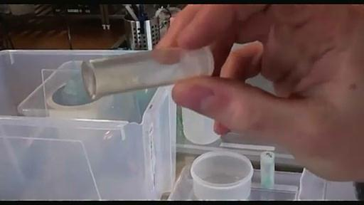
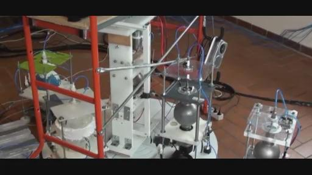
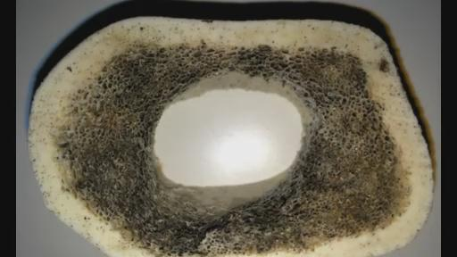
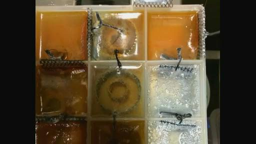
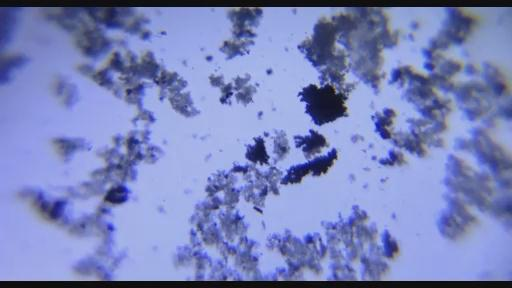
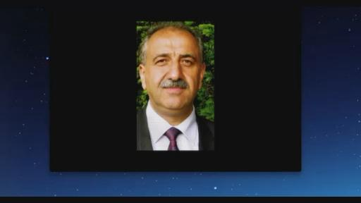

2014-05-22太空学院第11次教学
创建时间：2014-04-22 20:52 修改时间：2014-04-22
20:52 作者：KESHE_HUMAN
视频下载http://pan.baidu.com/s/1dDAE5ET 含实验图）由VAO提供 2014-5-22太空学院第11次教学 口译：漫步环宇 录音：漫步环宇 打字：KESHE_HUMAN、水莲 复制：水莲 统合：KESHE_HUMAN
00:00:00开始
BART：JAMES。我彻底忘了你让我发的邮件地址了，我本周要去参加一个葬礼，因为我的一个好朋友去世了，所以我要忙这些事情。 RICK:哦，那你把这个事情告诉全世界了。 JAMES：谢谢你BRAT。 你有时间的时候再做吧。 RICK：好了，我们已经在实时频道上了。我们试试声音，还需要把来自太空学院的人们加入到我们的频道中来，需要他们所有人都上来。 VINCE：我们可不可以给你传一些照片，我们在交流的时候能用到。 JAMES：VINCE，说的是好主意，就是把文件传到GOOGLE的云盘上。 VINCE：这样很简单，你点一下链接你就能看见图片了。 JAMES：确实很简单，已经在线了，如果能够让太空学院的人也这样做的话。比如说，他们在会议中分享的图片也这样做的话。 RICK：我想还是事前发给我，我可以事先发到硬盘上，因为如果说在会议当中把图片发上去的话，它可能会占用我的带宽。我还听到滴答滴答的声音，会影响说话人的声音质量。同时当我去点击那些盘上的图片的时候，查看图片实际上也会占用带宽。这也是另外一个问题，如果能在另外的网络教学之前发给我是最好的了。但事实上事情可能总是和我们预先设计的有所不同。有的时候这些图片都直接堆放在我的桌面上，这样我就需要在他们谈话当中对这些图片进行挑选。 某人1：那我怎么能把图片上传到GOOGLE的网站上呢？当用的时候可以发过来。 VINCE：通常情况下你需要把右边的红色标识下面的上传图标，要点它。选择要上传的图片。 某人1：好的，我看看。 RICK：你还需要登录才可以，我经常这样做，我觉得最好避免不要用GOOGLE的盘。 VINCE：好的。 RICK：来自MAREK发来的通知，我们可能等一会儿才能和太空学院的人们连接上，在这个过程当中我们来听听笑话吧。GEERT，有没有笑话？可不可以讲i些，比如十个荷兰人的笑话，在等待的时候讲点轻松的话题。GEERT我们知道你在说什么。实际上我们这边也有一个来自荷兰的成员，他本是个生物化学家，但他在我们这里加拿大每天忙的事情是开出租车，这就是他做的事情。 BRAT：可以知道盐溶液具体是多少吗？才能做出恰当的铜的甘斯。 某人1·：它的浓缩比率。 BRAT：是的。 某人1：我用的是50%，一公斤的海盐，15升的水，实际上在几个月前一次网络教学中提到的。 BRAT：我实际上要把这些事情都搞清楚，把它都记下来，我实际上不想按你刚才说的数据去做。 某人1：你是说，不要那种绿色还是白色呢？ BRAT：绿色的。我这边做完之后，颜色有一点点绿色的，现在大部分是棕色或者桔黄色的，看起来有一些比较暗的棕色。 某人1：我这边的颜色看上去是桔黄色，应该是甘斯，还有一些绿色，应该是铜的甘斯。 BRAT：桔黄色是什么呢？ 某人：橘色我说不准，应该是和CO2的甘斯有关。 BRAT：我昨天做了一些新的，在溶液当中放了一些维他命12的复合溶液，在里面放了一些钾，一些氮，也放了一些盐。 某人1：你有没有电压表去量一量呢？ BART：没有。我只是把所有东西放在溶液当中。 某人1：电压表在我看来只是给实体一些脉冲作用，所以当我知道我做了一些改变的时候，它会告诉我它是不是正确。 BART：好的，我也来检测一下。我在这边也做了一个，我之前也和各位说过，就是在那里面我放了各种各样不同的成分，看上去怪怪的。 某人1：那你用的海盐是什么类型的呢？ BRAT：最开始用的是最普通的海盐，另外的用的是钠盐。 某人1：那种普通的海盐是不是有灰白色？ BRAT：不是，它是白色的。 某人1：没有绿色呢？ BRAT：没有，我只是放了一些钾。 某人1：我实际上用的是真正来自海里的成分，使用前还要进行过滤处理。 RICK：好的，我明白了，谢谢。他们应该已经上线了，但是不知道为什么还没上来。
VITO：你好。 RICK：早上好，VITO，MAREK告诉我要等一会儿才能跟你们连线，我也不知道一会儿是什么意思，是等我们喝一杯咖啡还是吃个蛋卷后才能上来。是不是在谈论有关纳米材料的事情。我们是不是需要把BRAT的一些图片发上来大家看看呢？ BRAT：我用到的一个图片，就是使用到了锌，上面有绿色还有桔黄色的效果，这些东西都混合在一起。 VITO：你已经在在线频道上了。 RICK：你刚才说的是最后一个图片还是哪个图片呢？我不知道你说的哪个，可不可以再点击一下呢？ BRAT：哦，看到了，倒数第二个，上面有比较暗的条条的效果。还有绿色的，棕色的状态的图片。 VITO：那么RICK如果我把图片放到SKPYE上会影响到我们的交流吗？ RICK：如果不太大，不会影响，在后面的交流中我会发出来。这是我周二的时候才看到的，我想让大家也看到它。这图片非常漂亮。看它大小小于200000bit（不到0,2MB）,传输速度也是非常快的，对我们的交流也没有造成延迟影响，看上去还不错。VITO:好的，我只是想让大家来看到这个图片。 RICK：我已经在花园中看到这些设置。 VITO：然后用水来冲了一下。然后用PC来处置它，发生什么了呢？现在是第6天了。到目前为止呢，很明晰现在在控制室当中，现在去说它还是有点早的。 BRAT：如果你去看我发的第二个图片的话，那么实际上它是同样的东西，但是它只是一卷比较厚的东西，量很大。所以，在它的上边就开始出现了层。 MAREK：早上好。 RICK：MAREK在说话吗？早上好。 MAREK：早上好,JAMES，大家好。 RICK：大家看来都比较好，你那边怎么样呢？ MAREK：那么我们现在也来了。但是我们还在等凯史先生。（00:11:35-00:12:27没声音）好了，我们需要让在线的网友知道我们还在等待来自太空学院的这些人的上线。那么当然也在等待凯史先生上线，他们可能在忙他们早上的事情。 MAREK：那么我想，我们现在可以在凯史先生没有上线的时候开始进行我们这次交流了。他可能在后期加入到我们的谈话中。 RICK：当然如果你可以这样做的话，那也是非常不错的。好的，那我们做个声道检测看看情况怎么样，我们就准备开始了。我现在可否宣布开始了我们的网络教学呢？ MAREK：好的。 RICK：这是第11次网络教学，我的名字是
Rick
Crammond，（RICK的FACEBOOK账号：
https://www.facebook.com/mrfixitrick?fref=ts），我住在加拿大的西海岸，现在我们和来自意大利北部的知识寻求者进行了一个连线，当然也会请到了来自凯史基金会的凯史先生，还有我们在SKPYE在线频道的上一些其他的朋友，还有在GOTOMEETING的，当然还有在很多在线频道上来自世界各地的朋友，我想知道现在有多少人在频道上收听呢？GEAF你看下。GEAF：现在大约有110人在在线频道上。
RICK：好的。看来差不多有110多来自世界各地的网友在等待我们网络教学的开始。可以看到从中国到罗马尼亚的，我想MAREK你现在可以开始说些什么了，我们也就可以开始了。 MAREK：好的，那么目前都来了，YUKAKO没来，有JOHN,JORE,YVAN和她的妻子，ARMEN，还有我，欢迎各位参加网络教学，我们要和大家分享我们在太空学院凯史基金会经历的事情。事实上我们在以一种双向的方式进行工作，一方面在实验室进行有关反应器方面的工作，还有甘斯的一些材料，另外的一种方式就是开启了农业方面的工作，所以这些就是我们目前正在工作的一些方式，有关我们相关的实验室来说，实际上我们也做了有关反应器方面很多的改变，我们试图来理解更多有关它的行为，事实上这些反应器都有特别的属性和个性，在过去这一周，我们实际上有2个反应器停止了，电机已经不能够正常运行，比如YVAN的反应器是第一个停止的，我不知道停了多长时间，差不多2周10多天了，我不知道，第二个不能运行的是半球形伊朗的反应器，（左侧为ARMEN和MAREK联合制作的反应器，右侧为使用核放射性材料的伊朗翻译器）这些我不知道怎么来说这个事情，被压制的电机或者被压制的状态，我也不知道怎么说，要取决于YVAN的反应器。那么YVAN的反应器现在仍然是非常的活跃，让我们用磁力仪进行了测量之后，数值能够达到250左右微特斯拉这样的水平。（利用磁力仪软件测量反应器磁场变化）伊朗的反应器看上去更弱一些。早上好。（在背景中说话）是的，我们在说话。KESHE：非常抱歉。 MAREK：所以事实上，我们本周前将会以不同的方式进行实验，本周我们将进行更多的自由的时间，来根据我们的一个感觉，和我们想进行的实验进行改变和调整。针对这个反应器来说，所以呢，现在每一天，我们这些控制着这些反应器的人都试图用不同的方式来感受这个反应器是如何运行的，利用一些测量方式，我也是在完成这些工作，在2天前和YVAN一起做的，实际上在星体组合上做了一些调整。我们也看到了在上面2个反应器的相互作用和影响，我们也试图去测量这2个反应器之间的一些场体的数据。其中包括ARMEN的伊朗的反应器，还有我的反应器。那么还有一个白色的，是另外一个反应器。 XX：你说的是哪个？ MAREK：另外一个我想可能是YVAN，我也说不准，所以才试图去测量反应器之间的数据，就是磁场变化。抱歉我刚才说的并不是YVAN的，我们实际上也在改变它转动的速度和方向。我想应该是一个新的反应器，应该是半球形的，我们也试图给它设在同样一个转速上。所以它们就按照这种逆时针的方向旋转，对了，我记得当时，在最开始的时候，是以顺时针的方式旋转，然后我们去测量它们之间的场体的变化，然后我们把一个反应器的旋转方向改成了逆时针的方向，然后再去测量它们的场体。现在我们来对它进行检测，有了自己的一些见解，来看它对整个场体的改变有什么影响。通常我们会把我们的磁力探测剂就放在了中心反应器中间的地方，就是在它的反应器外壳的磁道中间的地方，就是在这个离外壳10厘米的地方，在这个地方进行测量它场体的大小，如果我们不把探测器拿走的话，当然我们也试图去移动其他的反应器，然后来查看这个场体它变化的情况，然后经过一些重新的配置，最后交换的是YVAN的反应器，还有JOHN的反应器，所以实际上我们是在一个三角形的状态下来进行这个测试的。YVAN的反应器它就有一些，（00:25:21听不清），JOHN和ARMEN还有MARKO的反应器，他们都围绕着中心反应器，也就是说围绕着输出电能的反应器，我们也成功地收到了降低场体的数值，我们也按照XX的方法成功做到了，就是很快接近它能够出现飞升的情况了。我们当时是从63-65这个数值，然后到了49微特斯拉这个数值。根据凯史先生所说的，这是一个很好的成就，但是我们就给反应器输入了氢气，是给那些单核的反应器输入的，也给那些双核反应器外壳也输入了2个剂量的氢气，然后给内核输入了1个剂量的氢气。经过这一次的输气之后，我们再次看到了场体数值的提升，看到了场体强度的提升和增加，所以我们就保持了它这样一个状态，保持了另外一天的时间，就是希望能有另外一次的起飞，对起飞这样的一个控制，能够有一个更深入一步的研究。我想现在可以把麦交给JOHN，我想他能够就我们取得的一个成就发表一下他的观点，就是在他的针对星体结构的方面的一些经验，或者实验，发表一下他自己的观点。
JOHN：好的，大家好。今天早上我实际上也在忙着做我的另外一个陶瓷的反应器，在其中加入一些甘斯的材料，一个培养的材料。这是一个比较小的反应器，这个反应器外形上看起来比较小，在尺寸上来说，有大概300毫升这样一个容量。我们在其中置入了60毫米的甘斯材料，然后给它加入到旋转的反应器当中，它吸收了一些水分，我们需要把它们分离开，然后在其中加入更多的一些材料，那么把其中的一些量给去除去，所以它整个旋转的速度应该是很高的。在这个过程中没有出现一些机械方面的问题，当时我们达到的转速是每分钟1700多转，在这个过程中，我们需要进行很多的操作，这个过程当中，我们在轴承上出现了一些问题，就是在陶瓷的反应器上面，它旋转的时候丢失了一些金属，就在轴承的内部，所以停下来了。所以这是我们的第一次的实验，利用这些甘斯的材料作为一种材料来制造出等离子体，我们也看到了一些等离子体，所以实际上我们可以看到它运行的时候的一些场体的变化，实际上我们是在前天的时候开始的，当时我们启动之后我就把其他所有反应器的场体都放在它的附近，用这样的一个场体来测量中心反应器的场体，场体就得到了一个提升和增加，小的反应器第一次是给它放在了侧面的地方。（不同位置检测磁场的方向和强度）昨天的时候就给它完全放到了另外一个地方，它就和其他的反应器的距离，就在非常远的地方。由于它转动的时候有这些震动的现象，所以会出现噪音。这也是因为我们看到了，在它地面的周围就出现了一些很容易观察到的金属的现象，金属这些物品，这样的一些现象。我们就停止了反应器的运行，在这个过程中需要进行重新的调整，所以昨天的时候我们在做反应器的时候，和其他的反应器出现这种延迟的情况，我和MARKO一起合作来解决这个问题。我们所做的就是，因为我们需要来开始观察反应器运行的时候会出现什么样的情况。我们现在有2个反应器，它出现了这种电机无法运行的状态，于是我们就决定把它从星体组合中取出来，其中就有半球形的反应器，其他的反应器还能够正常的运行。我们注意到每一次我们从星体组合中提取出某一台反应器的时候，我们都会去测试它的场体，YVAN的反应器就有一个非常强大的场体，即使说这个场体不再旋转了，但是它的场体还是很强大的，它实际上是我们能够测量出的最强大的场体。另外一个就是伊朗的反应器，它同样有一些场体，伊朗的反应器实际上是非常特别的，因为我们事实上已经测量到了2个等离子体，一个等离子体在它的半部的球体，另外一个实际上是比较接近反应器的底端，比较接近电机的底端。伊朗的反应器它实际上是一个完全封闭的反应器，它就是在上边在半球当中运行，实际上是一个完全封闭的空间，是静止的。而反应器的底端呢，是一个圆筒形的盒子，也是封闭的。它实际上就是包含了，也是用来保护电机的。也就是说，在装置的内部也是进行了一个完全的纳米涂层的处理，即使是在电机的附近和盒子的底部，所以我们对等离子体的一个测试，显示出在装置中，有2个等离子体的存在，一个在上边比较靠近上边的半球，在正常的半球里有等离子体，同时我们测量到在下面接近电机的地方有等离子体，实际上是一个很奇怪的情况，我们能测量出2个等离子体的存在，我们从底部到上端，在电机这部分的场体从某一个场体的数值会开始向上增加，我们看到在场体上的一个提高，然后当我们达到在中间的时候，出现了降低的情况，然后从半球乃至上边的部分的时候，我们就看到了这个场体的再一次的提高，所以实际上我们在系统当中看到了2个不同的等离子体，所以这是实际上我们从星体组合中取出的2个反应器各自不同的特点。我想可能这里出现了一个小的问题，在我们的实验过程中发现的问题，我提议来说，这2个反应器我们把它从星体组合中取出来。那么在另外一个房间，我们也设置了一个不锈钢材质的半球形的反应器，它也出现了等离子体，那么我们实际上用这样的一些反应器把等离子体给关闭掉了。然后我们用这些等离子体给拿出来，然后再保持、保留住这些等离子体。
实际上我们在这样一个实验的过程发现，这个等离子体实际上也没有完全被处理掉，那我就把它放在了那里，组成了一个4个反应器组成的组合，其中它就有一个球形的反应器。那么在这些整个球体反应器当中，我们也试图去理解运行过程中发生了什么事请。然后你去感受它的场体和增加的这个过程，也是通过移动这个反应器来理解这个过程，所以实际上我们最初开始在每一个反应器的附近来测量它的场体，之后我们又把每一个反应器从组合中取出来，然后我们也试图去理解这些反应器相互作用的关系。因为我们把反应器取出来的时候，在我们的场体上就出现了一个增加的情况，就是说从中心的反应器的一个测量上能够看到这种情况。所以每一次当我们看到一些在场体上的改变，就是接近中心的反应器的时候，我的结论就是说，在我们的每一个反应器当中，都存在着这个等离子体，就是都有等离子体的存在。所以每一次我们做一次移动，我们都会来等待看看会有什么新的情况发生。所以每一次我们都会看到不同的情况，每一个反应器它对中心场体的影响，所以每次当我们把反应器移动到离中心反应器比较？的时候呢，然后我们就会把另外一个反应器放到离中心反应器比较近的地方。我们来通过这样的一种方式去试图理解，它在这个过程中发生了什么，以及定位之间的关系和有哪些影响。就是说这3个反应器它们不同的定位，在中心反应器之间这样一种变化的关系。最后我们也是再次的把所有的反应器给重新安排回来，就是4个反应器的星体结构的状态当中。那么实际上所有的反应器都是非常靠近中心反应器的地方设置的，都放在了中心的平台上。在这之后就是在反应器中输入了更多的氢气，那么这就是我们这一天做的工作，在这个过程当中我们看到了一些场体的降低，就是当我们把所有这些反应器都给组合在了一起之后，就出现这样一个降低的情况，在这个过程中我们看到了有推力的出现，我们注意到场体被一点点压了下去。实际上也是我们的一个目标，就是把场体降低一些，如果说你能够让它达到环境的场强的话，我想在那个时候我们就能够看到一个提升的出现了。但现在还没到那个状态，所以我们每天还在往里面输入气体，往里面加入更多的氢气，以便于能够增加更多的等离子体，这也是我们对等离子体的一个理解，在反应器运行当中。那么在反应器运行当中我们也进行了纳米涂层的处理，所以我们看到等离子体的打开已经实现了，那么也看到了氢气和纳米材料相互作用的情况。在氢气当中的一部分电子，还有和反应器内壁的纳米涂层相互作用。它们的这种相互作用就使得电子被吸收，但是同时呢，由于纳米材料的结构，它的电子就开始被打开了，这样就改变了它本来的属性，然后电子的打开就允许它返回到、被插入到质子当中，而质子的电子已经被打开了，就变成了一种类型比较微弱的中子，那么它实际上就打开了，开始了等离子体的运行了。那么整个这个过程实际上是我个人对它的一个整体的理解，那么我也是通过我这样的一个理解来给大家解释的。在某种程度上来说，这是一个比较更好的理解。之前的这个理解是这样说的，就是电子它被从氢气当中提取了出来，但是如果这样的话，它的电子又变成了什么呢？那么实际上它的电子再次被重新插入到了质子当中，以便于能够使得它成为一个中子，这样的话就打开了一个地方，于是就开始等离子体的运行。我想我已经做到了我能解释的这些情况。 所以各位有任何问题吗？RICK：看来很明显，好像没有人有问题啊。那么VINCE你看GOTOMEETING那边有没有人想说点什么呢？ GEERT：OK，我有一个问题。（第一次翻译截止00:45:00）
我想问的问题就是电机内部的磁铁会不会对等离子体的运行会产生任何影响呢？就是电机和反应器给封闭在空间当中的话。
JOHN：好的，我们现在出了一
个小的技术故障来调节一下电脑，好的，你可以听到我在说话吗？ GEERT:可以。 JOHN：我听不到你们说话。 RICK：我们是不是也出现了什么技术性的故障. JOHN：能听到我们说话吗？ RICK：是的，我们可以非常清楚的听到. 能听到我说话吗？ KESHE：你好， RICK：能听到我说话吗？ JOHN：可以的。 RICK：JOHN可以听到你。好的，那么磁铁在旋转过程中也是起到了一定作用。
我们可以在旋转的时候去测试测量它的场体，那么很明显反应器和磁铁有一个很强的对应的关系，尤其表现在半球反应器上，我们可以看到在上面有一个更大的可以测量出的场体，所以很明显这里面有一个相互作用的关系。它们之间在运作的时候有的这种相互作用的关系，很明显的它对这个场体有一定的影响，我无法给你一个完整的回答和解释就是有关发生了什么事情，它是一个旋转的场体，针对这样的一个磁铁，这是一个半球的场体，它本身也有一个场体在旋转，所以很明显的当然我也没办法说再更多的相关的这个问题的回答。 GEERT：是的，我也用到了磁力仪来进行测量，看到有一个1万微特斯拉这样一个数值在电机上检测出来，这个数值是非常大的，我们当时也距离内核7-8厘米的位置进行检测，在距离内核20厘米的位置也进行了检测。 JOHN：是的，也确实看到了电机有一个很强大的场体在那个时候，但是比较有趣的是当你看到了场体是来自于球体，而在这个水平上我们能看到不同的场体当我们在测量的时候，在它球体的上部中部下部都是不一样的。你可以看到场体垂直的一个部分，在实验室的磁力仪当中我们注意到这个场体它也是有一个3D的方向，出现了一个完整的适量的场体，我们在X轴方向上出现了B场体，还有在Y和Z轴上都出现了B场体，那么通常磁力仪所设置的方式就是它会设置成这样一种方式，就是它的Y轴数值在B场体的数值是垂直的，所以我们通常会看到它取决于我们用什么样的单位去测量，在垂直的这部分它也经常保持在70微特斯拉的状态，然后从这里开始往下降低到49这个数值，甚至达到了45微特斯拉的数值，这是在中心反应器的中部的数值，它实际上是垂直的这个部分，最有意思的部分。在我们这个情况下我们能看到在我们这个结构当中如果我们在取得一些提升效应的时候，这个数据是很关键的。 GEERT：我想问的就是你们的电动机基本就快停止运转了这个情况，我是说是不是要给它一定的距离？如果这样的话测量数据就可能会更正确一些。 JOHN：这也要取决于你的电机置于球体的轴线上，或者放在平面的位置上，用一个皮带轮来使它进行转动，这个电机它的位置如果是在一个平面上的就会有更少的相互作用，就和现在的安装方式比较起来的话。我知道这是安装时候的一个问题。 GEERT：好的。我现在知道它是如何运行的了，所以很可能在下周我们会有更多时间来进行测试，来做更多的实验，有关等离子体的时候，我们也希望下周可以打开我们的等离子体。 JOHN：我建议你就让它持续运行一段时间，等离子体它的开启需要一段时间，我们的做法就是在里面加入一些少量的氢气，不要加太多，比如说每天加1个剂量的氢气。 GEERT：是的，我现在做的测试就是加入氢气，那么我也有氩气他们也告诉我也可以使用一些氩气。 JOHN：对你的装置事实上它在里面都进行了整体的纳米涂层的处理，我认为你可以开始制造出等离子体，我知道这个情况只要加入氢气就可以了，如果事实上加入一些氩气在晚些时候的话，将会帮助等离子体在中心出现一个挤压的地方，在更靠近中心的地方。 GEERT：我下周也会进行这方面的试验，在上一次的网络教学中你提到了要给它加入更大的压力施加到等离子体上。好的，这个等离子体的打开在后期将会影响到气体。 JOHN：但是事实上，就像我理解的那样等离子体是被施加了压力，针对这些气体，它打开了等离子体，那么我们现在还没做这个试验。 GEERT：利用双向的接触的这种方式可以取出1-2个剂量的就可能了吧，我知道凯史先生制造出了这样一种方式，就是更深的真空的状态。
JOHN：我们没有用到这种深度真空的装置，它还没有连接在一起，所以实际上我们还是用普通的低度的真空泵。
GEERT: 我知道凯史先生制造出了真空。
我想他是提取出了很少量的，当等离子体打开之后，他就取出其中非常少量的成分，用这种方式制造了更深的真空。 JOHN：实际上我们需要去扩张等离子体，重复去提取气体和重新的置入气体，它实际上可以产生这种扩张和压缩的动作或者过程。这也是我们需要进行的一种方式，它实际上并不是少量的气体，就是我们提取的气体量并不是很少的，我也没有理解我们之后提出了很少量的气体，我们把气体给实现了一个真空然后加入了更多的气体，实际上是出现了一个突然的改变，那么这个突然的改变的时候，那么这个等离子体就被打开了。 GEERT：好的，明白。这是我要问的所有的问题了。 JOHN : 好的，我可以把麦交给MARKO，他一直在做一些实验。 MARKO：好的，早上好。谢谢JOHN你所做的这些解释，是的，昨天我们也实际上就我们反应器的事情和JOHN产生了一些问题，JOHN也非常详细的解释了情况，关于我们所做的这些事情，我们现在已经有了星体的组合，其中在中间有一个反应器，在它的周围每隔120度都有一个反应器，那么这样的话，我们可以在这个过程移除分开移入的这样的一个方式进行了运行，这个过程实际上我们也改变了场体的变化，也对场体进行了测量。所以在某种程度上我们可以做出一个结论，就是当我们把这120度的这样一个反应器的组合更向外移动的话，场体它实际上会出现增加的情况，所以它实际上就是增加了在这样一个我们本来不希望会出现的这样一个增加的情况下呢，就相当于在相反方向上它的场体的强度增加了，如果你把反应器更靠近中心反应器的话，那么这个场体会降低。所以这个方向它是环境能够理解的一个场体的情况，那么这也是我们需要进行的方式来得到提升的状态，所以实际上我们很幸运现在有很多的反应器工作在一起，差不多有7-8个了，那在某种情况下，就好像精神分裂症的人具有某几个人的个性，当你不知道他们的话就很困难和这个人沟通，如果你知道它们每个人的话你和他们工作实际上就是一个很愉快的事情。无论怎么样，我们在试图找反应器的行为和特点，你可以说它实际上就是它的一个个性吧，有的时候也反应出我们自己的性格，也许我们可以谈论一些我们已经启动的农业方面的情况，我们已经开始在外面进行种子方面的实验了，我们所使用的是之前制造出的一些材料，也是进行了纳米涂层处理的，还是有甘斯处理的种子，也是我们之前的装置当中制造出来的饿，现在有3个盒子装的满满的，还有另外４个盒子和它进行对照比较，在这些盒子中会培养不同的种子，其中包括小麦玉米还有洋葱,色拉，各种种类的蔬菜，我在这些盒子当中制造不同的种子还有香菜，当然我们还有一些番茄和西红柿，但是实际上我还没对更多不同的植物进行处理，实际上我以一种方式来进行，对这些种子在甘斯材料当中进行各种实验。然后我把这些植物放入甘斯当中，半个小时到１个小时的时间，每隔１０分钟我都会拿出一些种子埋入到土壤中，我用不同的甘斯，有ＣＯ２的甘斯，铜的甘斯，实际上我准备了非常完备就是把不同的种子放入甘斯当中，那么这些种子现在已经在土壤之中了。现在就在观察最终会有什么情况，它的结果会是什么样的。这些植物现在还没有有长出来，就是２天之前做的事情，当然这些也是我们的实验已经开始了，这些甘斯实际上有不同的磁引力场的一个状态，当你把种子放入到这些甘斯场体当中，我们也试图去观察它这种以暴漏在场体当中会出现什么样的情况，某种程度上，同样其他一些科学家也可以这样来做类似这样的实验。但是他们用到不同的方法，几天前YVAN就向我展示中国的科学家发来了种子，它实际上是被带入到了太空中的种子，通过火箭送到卫星上的种子，不知道他们把种子放了多长时间在太空中，之后把种子带回到地球然后看种子会有什么样的生长模式，还有这种结果，那么在实验上的图片上，可以看到植物生长的非常的茂盛非常好的效果，所以在某种程度上我们以这种方式来做事情，就是把种子暴露在不同磁引力场中，就是用我们不同的甘斯材料。这是我们开启的农业方面的实验，我会每周都通知各位我们在这个报道中的实验进展，如果你想做一些色拉的蔬菜，你可以通过甘斯的材料对种子进行一些处理，应该说味道也会很好的。 ISON：MARKO,我有个问题，你现在可以接受问题吗？我是ISON，我把豆的种子进行了处理在6天前，然后把它们种植在了土壤中，我有2个问题，第1个就是当你把种子放入甘斯前有没有先泡在水当中呢？ MARKO：没有，我实际上直接放入到了甘斯材料当中，实际上甘斯当中也就有水，是甘斯和水的混合物。我们实际上就通过盐溶液制造出的甘斯材料进行了一个冲洗，我们用了微量元素的水溶液来矿物质的水溶液清洗甘斯，（01:08:47听不清）含微量矿物质还是还水？
是为了把盐当中的甘斯清洗掉，清洗几次后，在甘斯的材料中就不会再有盐的成分了，因为盐的成分对植物并不是很好的。 ISON:
是的，我也遵从了这样一个程序，目前来看现在只是进行了6天的情况，情况还不是很明显，我们用这了这样的方式来处理，我们的实验有的土壤就进行了处理，这是2天前进行的，其他的就没有进行。 KESHE：是的，我们之前也看过这些情况，实际是在2年前做过这方面的实验，在美国也做过这方面的实验. MARKO：那我现在把麦交给凯史先生吧。 KESHE：很抱歉，大家早上好，事实上我们在差不多2-3年前看到过这种情况，很多人也知道这个情况，也和将近7-8个国家进行的一个合作，在我们的科研报告中这也是我们在2年前资助的一个项目，在这个过程中我们也看到同样一个情况，大约3-4年前把种子侵泡了3-4天时间然后种在土壤中，实际上当时我们也把种子放在了甘斯材料中浸泡了将近3天时间，然后3-4天后，第二批这样剂量的甘斯材料也被置入到土壤当中，随着植物不断生长我们也涉入到农业领域，我也会以一种非常科学的角度来解释具体发生了什么情况，你会看到这种改变，这种改变科学家们可以去解释，就好像我们在农业方面的实验的时候，这样你也可以取得这样一些变化，其中一个就是你把这些种子放入甘斯材料中，甘斯材料有自己的磁引力场的状态，就相当于浸泡在甘斯的涂层就会出现在种子的上面，这些涂层你会看到上面有黑色的情况，它实际上是纳米材料本身就吸收了纳米材料全部的磁引力场的光谱，这些涂层就可以制造出一个类似吸收吸附的机器，所以实际上这些涂层就好像是一个机器，它可以不断的吸收环境中的磁引力场，其中主要就是环境中的水和氮，其中有一个增加就是在生长的过程中突然出现一个快速的增长，因为这个原因他们从环境中由于种子表层它具有了这样一个磁引力场的涂层，所以它能够在环境中把氮给吸附下来，所以我们现在也完全理解了整个过程，所以这是为什么我们研发了这项技术，也鼓励各位来进行这方面的实验，我们也希望就是这个实验能够进入到下一个发展的环节，就比如说我们在塞拉利昂南部的一些大学所进行的实验，我们将在那里针对这些材料进行一个规模化的生产，在非洲这些技术就不再需要化肥了，因为在空气中有足够的氮气，因为我们现在用到了这样一个技术，种子涂层本身就可以从环境中吸收不断需要的氮和湿度，你就不需要给它去浇水灌溉了，只要你们在做这个实验的时候把这个种子进行一个事先的浸泡，之后你会发现这是一个非常有趣的情况，它本身自己会形成一个非常小范围湿度的环境，尽可能在它表面保持这样一个环境，然后你可以看到它从水当中能够吸收多少的湿度，就是从空气中能够吸收多少水的湿度，因为就好像我经常说的那样，在地球最干旱最干燥的地区仍然还会存在15%的湿度，所以在非洲当出现干旱的时候，如果说在最初的时候把这些种子给泡在几升的甘斯溶液中，之后再把它种到地理，这样这些种子就会从环境空气中自动吸附它所需要的水分和湿度，实际上这就是我们已经知道的一个技术上的突破，那么各位现在也知道了这个情况。我们也经历了在XXX干旱当中的环境当中实现了农业丰收的情况，这个溶液就是这项技术的关键，那些农业种子的公司他们就试图去发货它的产品，就是这种经过纳米涂层处理的种子，农民他们只需要非常少量的水在沙漠当中，种子就会出现一个发芽的过程，在3-4年前我们的一个孩子当时在曼彻斯特，只要你不把种子从地理拿出来就不会不断生长，因为每一次长出来之后，他就在上边会把长出来的部分掐掉，然后还会生长出新的茎部出来，直到差不多4周后决定把整根植物连根拔出来，我们看到在一个种子上会长出6-7个株或茎，实际上也是解决饥饿的一个方案就针对非洲的解决方案，也要感谢相关政府就是塞拉利昂的政府和他们相关的官员，现在我们已经被授予了相关的这些设施和场体，然后我们现在已经做好准备把相关设备发送到塞拉利昂这些大学进行相关实验，现在在比利时的一些科学家也做好了准备随时动身到塞拉利昂进行这方面的实验，我现在把麦交给YVAN。 ISON：我现在还有一个有关农业方面的问题，现在已经做了另外一个实验在温室里面，我把一些黄瓜种子放到了里面，其中一个种子这也是2周前的事情了，我放入的是这样一种星体组合的方式，种子也进行过铜纳米涂层的处理，在其中一个种子上进行的处理。现在已经是2周后，那个涂层处理的植物要比周围的植物多出2倍这样的效果。 KESHE：是的，但是你别太兴奋了，它最初的生长是很兴奋的，但是后期可能会被正常的植物给追上，我对所有想做这个实验的人们的一个忠告和建议就是：就是在这个农业发展的新方向的人，就现在还不要去吃植物的果实。 ISON：好的。 KESHE：因为问题就是我们现在还不知道是否果实存在DNA的改变，这个工作在后期我们要去进行检测的，因为到时候有不同的人去进行测试，那么
JORGE作为我们知识寻求着的成员，他就有相关的联络人可以完成这方面工作，在后几个月我们将会推动这个工作的完成，通过相关的联络人和其他的工作来完成我们要做的事情，所以我要再一次的忠告各位不要去食用通过处理长出来的果实，一直要等我们的报告出来没有任何基因的改变之后再决定，当然也不要把这些果实让动物吃到，我们也不希望小狗出现基因上的改变，就是比如长出3个耳朵出来类似的情况。 YVAN：好的，大家好，我是YVAN。 RICK：你好，YVAN。 YVAN：关于种子方面的实验我们已经准备好相关土壤，在准备种子的过程中我就遇到凯史先生解释说，凯史先生就解释到他们之前在比利时做的实验，在其他地方做的实验，他们发现在某种情况下当他们把甘斯材料放的时间太长，这些材料就会换成草，本来应该生长出玉米但你最终长出来的是草，这个情况在本周很明显的就是把我的研究方向做出了一个改变，我查看了我的一个5-6年前的实验当时在瑞士完成的，当时某个制药公司现在就成了一个XX（01:18:00听不清），有2个瑞士科学家，其中一个人的名字XX，另一个的人名字是XX，是他的实验，他们就开始了这个实验，就是把种子暴漏在静电场的环境中，就是把种子和鱼卵暴漏在静电场当中，所以土地有静电场，我也忘了就是数值就是关于他用了多少电压在实验过程中，他们也就开始把种子还有桂鱼它的卵暴露在静电场当中，这是个很高的静电场，然后当这个过程结束后他们去种植这些种子或者去养这些桂鱼的时候，他们就发现长出来的植物是让人难以置信的，他们就发现在一个根茎上面长出来的玉米数量能够出现7-8个之多，在桂鱼的实验上他们也发现桂鱼长的体型巨大，就很像是古代的那种我也忘掉具体的情况，就是你可以在互联网上找到他当时的实验结论，后面发生的事情就是当时制药公司也参与了实验，他们也参与了化肥杀虫剂的生产，然后关于这个研究最终就被停止了，这就是整个情况，还有就是在之前1年左右提到了一件事情就是，半球形的反应器它下面的电机停止运行这个事情是其中一个问题，通过我对自己的反应器的观察，它看起来就好像一个半球形的真空的，这里面有气体就转换成。
他提到一个问题，我回头再来说这个事情，所以通过我的观察它在某个时间点上就会停止运行，然后就像我上周解释的那样，凯史先生就把它给拆开了，用了磁铁然后通过了磁铁的做法就使得电机再次的旋转起来了，比如说你用手去转动飞轮的话，如果把它给放回原来的位置上，它就会使得电机再一次处于运行状态，经过那次处理后就正常的运行了1周左右的时间，在我们回家之前我们就想知道某一个点上的时候我们想到其他一些球体也运行太快了，比如超过每分钟800转，所以我们想降低它的速度到每分钟600转，如果晚上没有人观察它的时候它就可能转的太快了就给反应器带来损伤，所以当我们那么做了之后就立刻出现了一种情况，我就看到我反应器的电动机不断出现一种快速的提升的状态，然后我们就：哦，它要停下来才行，我们看到来自其他的反应器的等离子体中的压力，实际上把在我的反应器的等离子体压缩的状态，然后整个容器的底端，就我们能够理解的状态要么就是等离子体把这样一个旋转的部件给搞坏了，或者等离子体的磁场它实际上和电机的磁场就出现了相互作用的情况，然后就最终使得电机停止了运行，或者这两种情况都同时存在的。另外一个我想说的就是JOHN也提到了，也是凯史先生前天解释的事情，这些纳米涂层就会获取到这些电子，当这些电子凯史先生说被捕获到之后呢，也就是当这些电子被反应器内壁的纳米材料上面的PN结它们上面的间隙捕获后，它就会被逆转打开成为它们自己的等离子体，下一步这些等离子体就是这些质子，这些等离子体就想同时在内核当中质子也会成为它自己的等离子体，然后下一步这两种等离子体就想统一在一起，因为他们都是来自于一个实体当中，然后他们就汇聚在一起就像中子那样，我们把它称为粒子在等离子体周围，但凯史先生说这种类似中子的等离子体运行的情况和真正的中子运行的情况比要弱很多，是不够强大的，他是这样说的。于是我就能够理解，那么这是我们早期的一些理解，电子在外层的涂层上面被捕获住了，实际上就意味着外层充满了更多的电子，这也是之前我们没看到的情况，当然也有可能这些电子也会在外层表面被捕获到，因为我们可以看到这些部分都是来自于反应器这些部分的，因为我们看到这些部分它是从反应器当中出来的，那么我们今天就应该来说这个事情，就是对反应器进行真空处理，我们要把这些仍然还被陷入在反应器中间的物质去除掉，这样所有的等离子体都会留下来。如果我理解正确的话在下一次对这些等离子体去进行一个很大的这种压缩的做法，我们会通过往里面输入氩气来完成这个过程，另外一个就是说有关相互作用的就是这种相关作用或者我们还没完全理解，能够观察到至少在我们还没完全理解的情况下就是氩气和反应器的相互作用，我的反应器当时停止了运行，在本周我们遇到了一些令人兴奋的情况，我没办法具体解释当时出现了什么，当我们改变了一些参数，突然MARKO的反应器内核是一个完整的球体，我们做的一些事情当然我们也不能说它是一个令人兴奋的事情，也就是说当我们改变了它的一个参数的时候就发现它通常比别人的反应器的转数慢很多，因为他的反应器电机是比较弱的，我当时在外面就听到了这样一个噪音，就像直升飞机飞过来，就开始发出那种”嗡嗡嗡“的声音，然后我赶紧急忙跑到了屋里来看到底发生了什么事情，然后MARKO的反应器的球体转数越来越快。我想当时可能超过上千转每分钟，所以我们就立刻解决降低电流，但我们之前没对电流进行任何改变，之前的转数都是每分钟400-500转，在之前过去几天都是这样一个转数，突然之间产生了这样一个变化我们也不知道做了什么产生这样的变化，可能就是我把两个反应器放得比较近的时候就出现了这个情况，就像把绳子系紧了所有的反应器，所有反应器都离中心反应器更近一些，对场体产生了更大的压力，这就是我在当中的一个经历也是我想说的，关于这个事情还有没有其他想说的问题。 LUDMIL：我有一个比较傻傻的问题。 JAMES: 我也有个问题。 LUDMIL：你有没有曾经试图用手去转动电机去观察它的轴承停下，或者电机没办法转了，它应该有个阻力能转动才对。 YVAN：根据我们之前的经验来判断，电机本身没有出现任何故障，凯史先生也说是由于等离子体的压力造成的，是强制的阻止了电机的正常运行，比如说你停止了电机给它保持在同样一个电压上，电流就会快速提高，这个电机可能就被烧坏，我们之前也看到过这个情况的发生，所以我们就把电压降低，这样的话整个电压就降低下来，因为即使是我的电机有一个水冷系统，因为它是处于这种真空状态的所以实际上还会很容易受到这种状况的所以还是很容易受到影响如果电流太高的话如果突然停止的话。 LUDMIL：是它的内核电机受到了影响，
还是转起来太快了呢？我想知道是什么问题。 YVAN：好的，让凯史先生来说吧。 KESHE：这是磁引力场的压力造成的，因为昨天发生了一个事情，就是能量反应器就是中心的反应器我们观察到2-3次情况，内核没和任何电能进行链接，电机是被完全关闭停止了转动，在这个过程中就出现了一个完全停止转动之后又开始了自己转动了起来，开始是非常慢速的，后来是非常快的，所以就破坏了它们之间的平衡，就是磁引力场造成的压力的这种情况，就是和电机本身没有任何关联，也就是说磁引力场等离子体它的强度要比物质的能量或者强度要大很多，在本周我们就看到，我们的3个反应器其中有2个它的等离子体场的数值是非常大，因为我们进行了测量，中心的反应器是有3个内核组成的，有2个中心核组合，实际上是通过由于阀门的存在，产生了摩擦力组合在一起，出现了这样一种定位，这2个内核完全的停止了旋转，然后它自己就开始了运行，一开始的时候非常的缓慢后来又转动的非常快速，然后又停止了转动，所以这和电机本身咩有任何关联，有一个非常明显的标志就是收到了等离子体场的影响，当我们之后有更详细的进展的时候我会详细解释这其中的原因，实际上是等离子体和物质相互作用的情况。（第二次翻译截止01:30:02）
LUDMIL：那是不是基本来讲等离子体它们就混合在了一起还是?
KESHE：你说什么？ LUDMIL：我想问的是等离子体它是不是像2个磁体那样，然后混合在一起的情况呢？ KESHE：是的，当然它们会出现相互锁定的情况，我可以来解释一下这个情况。 那么我想还是随着我们这个技术不断推进当中我们再来解释你说的这个问题吧。本周的时候ARMEN制作了一个非常小型的反应器，它就好像我们凯史基金会的一个新生儿。实际上就是在昨天几个小
时当中它也已经开始旋转了，然后制造出了它自己这样一个环境。看上去也是一个球型的反应器，看上去像透明一下，看上去非常漂亮的一个小装置，然后它上面安装了一个灯，给人的感觉就好像一个小婴儿需要人们关注的那种效果。所以看上去真是美妙极了。可以让他来解释一下。 ARMEN：大家好。 LUDMIL：那你现在想怎么给小反应器起名呢？ ARMEN：我现在想给它起个LUDMIL的名字。 LUDMIL：我喜欢这名字。我实际上离你们现在的位置可能不会太远的，我想再过一个月我会离你们那更近了。 ARMEN：好的。那我现在就把它起LUDMIL这个名字吧，如果你觉得这个名字好听的话。我之后还会发一些图片给你看。所以如果你定下来没有问题，你就让我知道，因为我之前还真没想过给反应器
起名这件事情。好的，那么我所做的这些事情就是，我向里面加入了一些CH3，那么它现在是一个铁的甘斯，我对这个材料进行了冲洗、冲刷3-4次，然后我用一个比较小的注射器，就是气在里面推射，当然这个过程好像搞得一团糟的样子，但我还是最终成功把这些所有的元素都给推进去了。它现在开始正常旋转了，那么我要抱歉的就是，我没对反应器进行任何拍摄的图片，所以各位现在看不到照片，MAREK当时照了几张照片，但现在放在实验室当中。所以下次我会照几张，然后发布到我们脸谱的账号上，所以我希望它会成为一个最好的反应器，这是一个非常小的反应器，我们也想知道它会有个什么样的效果。 RICK：小反应器的话，实际上我们也在乒乓球的反应器上取得一定的成功，实际上小乒乓球反应器也承受了我们给它制造的一个完整的真空效果，它在这个过程当中成功地承受了真空的状态，没有出现任何故障崩溃的情况，所以这应该是一个成功的实验，所以我们也希望能够进一步来完成这个实验，当然我们现在还无法清楚如何在它内部进行纳米涂层的处理。就是在这个乒乓球内部，但实际上它只是一个从厂家发出的一个质量很好的乒乓球。那么现在它里面已经被置入了氮气，所以我们可能需要在里面置入一些氢气，可能就可以足够的来实现制造等离子体的效果了。我们实际上也在计算给它制造一个同样的力量，需要让它在一个什么样的速度上来旋转，就是每分钟的转数，就是说它里面加入了这些气体之后，在它的内核的表层或者表皮里面，就是乒乓球和4英寸的这样一个装置，或者说小于4毫米的球体，我们每分钟的转数可能会达到1200转。大致区间就是我们用到了转数是在1200转，不是原来设计的600转，以便于能够取得同样的效果。也就是说去让转数增加双倍的转数，以便能够对气体产生压力，这是由于旋转球体的一个引力的效应。这也是我们目前有关这个实验的有关情况。当然我们也对几个电动机进行了修复，还有一些相关的驱动装置进行了修复。所以我们现在就恢复了它的旋转，然后把一些装置的真空度更进一步增加了。所以我们也期待更进一步的实验。
JORGE：大家早上好，我是JORGE。我现在主要是集中在农业方面的实验上，我想来对这些种类进行实验，我们也期待着它能够有一个比较好的成长的效果，实际上我的想法和ARMEN的想法非常地接近，我实际上想去研究和理解的就是：实际上在我们做的农业方面的实验，一个衷心的想法并不是把主要关注力集中在空气当中，而是在它的土壤，对这部分比较感兴趣，所以对我来说，在目前这样一个阶段，我对根部非常感兴趣，就是根部的生长，因为如果说这些甘斯能够提供植物生长所需要的水分和湿度，当然它还可以吸收这个植物生长时候所需要的氮和其他的一些营养成分，这些都是植物生长的时候所需要的。我想对它进行一个测试，比如说我之前一个想法就是来对它进行一个刺激并且去进行实验，实际上我最初的一个想法是想去实现雨彩共生这样一个设置，主要是想理解它的根部是如何能够进行生长的，就是说我在根部进行一些甘斯，或者一些甘斯的混合成分的处理之后，这个根本就会有一个比较好的成长了。那么这些就是我的一个想法，也是我试图去理解的一些问题，这些是否是可能的，经过这样一个过程之后，就是发芽之后，它发芽所需要的时间，那么它所需要的状态，还有就是植物生长的时候所需要的各方面的因素，包括时间，需要的光照亮度，这些是否是可能，就是经过发芽，那么同时湿度也是一个非常重要的因素，在农业方面，所以我想在这些方面能够学到更多的知识。所以我可能在实验过程中，会去在2-3个种类上的植物上去进行实验，我会去选择不同的发芽的状态，就是选择不同的发芽的种类来理解在这里面都发生了什么事情。所以当我听到可以通过甘斯的方法来种植这些植物的时候，我实际上确实是感到非常的震惊，所以我想在这方面有个非常深入的学习。好像MARKO所培养的，我要说包括他做的其他的那些实验，对我来说我会把我的关注力放到我说的刚才这部分上，有关反应器控制方面，我实际上一直在和MAREK合作，试图去理解它们之间的关系，我们就发现就好像凯史先生所说的在我们内部有些东西来进行控制，所以我们还没完全理解这部分，会在下周有进一步的实验。下周的时候我们可能在最开始的时候一步步进行这个实验，因为它的设置实际上是非常困难的，对它做出结论也是很困难的。所以我们在这个过程中也试图去进行各种数据的测量，包括旋转的速度，还有它旋转时候的那种感受。但实际上即使是这样我们仍然还是想做出一个结论是很困难的，因为其他反应器的场体会在这个过程中产生影响，所以实际上我们需要制作出一个简单的方式来理解这一切。包括如何来控制它的强度，就是如何来控制每一个反应器的强度。同时还包括它们2个反应器之间的相互作用，这也都是在最初的时候，那么从现在开始呢，现在就是有了一个比较清晰的脉络，就是如何来控制这样一个比较复杂的结构，比如现在的星体结构的组合，还有一个就是在我们的实验室当中类似太阳系系统的装置结构，所以这是我现在的观点，如果你想加入一些你自己的想法或者能够说出一些能够让我得到启发的一些建议，我也是非常愿意听的。或者说给我们提供一些建议，就是你想怎么来做这个实验，包括在农业方面。我会非常乐意听一听你的建议和主张。
RICK：我们现在从现场有个问题，它实际上是关于如何去制作这些纳米材料，就是当它们在使用之后如何来处理这些纳米材料，是不是可以对它们进行回收利用或者说对它们进行一种处置，使得它们不会产生污染，是不是已经知道这方面的情况了呢？
KESHE：当然我们知道如何来处置，我们也会在这个过程中不断学习更多相关的知识，在后期我们也会告诉各位如何来处置这些材料，我们在做这些材料的时候每一次一直都要戴上手套的，因为我之后也会和大家解释为什么要这样做。实际上这些材料并没有任何的伤害的效应，就是说它不具有伤害性，它实际上只是能够释放出很强大的一个能量，然后你的身体就会吸收这些能量。实际上就好像是说，你本身就在没感到任何饥饿的时候，它那里面就有3倍的麦当劳在里面。所以你实际上吸收了很大一个能量，我就希望某一天你能把它消化掉。（01:41:36听不清）因为它是处于等离子体的状态，所以它向外释放出巨大的能量，所以实际上你能够吸收这些巨大的能量，如果能够以正确的方式来吸收就最好，随着我们这个技术向前发展，实际上这个技术也会应用在我们的健康医疗这个领域当中。还有没有任何其他的问题？在我要开始之前，还是让我现在就开始把，我给各位解释一些事情。我现在就需要来解释这个事情后我们再回到科学研究问题上面来，就像各位知道的那样，我们现在和比利时的政府出现了一些问题，主要是和比利时的前国王还有一个人。他设置了这样一个结构，主要是为了将我们凯史基金会的运作封杀掉的这么一个人，实际上我感觉这个人精神上出了问题。然后他利用各种各样的方式，试图来实现他的目的，也是不仅仅针对我，对其他一些科学家也是做了很多这些事情。所以为了能够中止它们这样一个进程，我今天就决定，就今天给国际刑事调查法庭提交了一份申请，去逮捕和审讯比利时的前国王，还有就是欧洲航天局的主管汉斯，还有德拉诺先生，展开一个完全的调查，所以我们已经把这个表格提交给了总检察官，就是刑事法庭的总检查官。这个书面形式的版本将会在今后24小时之内提交发送给他们，或者48小时之内提交给他们。(
http://note.youdao.com/share/?id=d9a0ec0b35f9ae837c5303667173407d&type=note ）提交调查的申请我也会让MAREK把它发布到我们的论坛上，这些犯罪分子现在即使他们还没有出现在法庭上，他们也会知道这件事情我们已经开始启动做了，我们在文件的末端有这样一页内容，你可以输入你的一些相关信息然后把它发出去。这个实际上并不是给我的，你可以去阅读整个内容，这样一个做法实际上是为了中止对这些科学家的杀害、放逐、迫害的行为。它实际上就是损害科学家的利益的基础上满足一些政府机构、政府官员他们私人的利益。这也是我们如何陷入到这样一个陷阱当中的，我们把这个技术作为礼物送给了政府，他们就认为会因为这项技术变得非常的富有，结果我们因为这样的事情变成了敌人，这也是整个事情开始的原因。所以我们现在也是谋求国际法庭、国际刑事法庭针对这个个案展开全面的调查，进行立案展开全面调查。我们需要所有正在收听我们节目的网友，或者所有支持凯史基金会的人，能够去填写这个表格，然后把它发给国际刑事调查法庭的检察官。然后让他们启动这样的一个调查的过程，或者是程序，所以我们也会随着事件的进展让各位了解更多相关的发展，就是针对国际刑事法庭针对这些人调查立 案的事情。就好像我在这封信当中所说的那样，非洲的儿童或者世界的儿童都会受到保护。如果没有的话它实际上是针对人类的犯罪。如果这些儿童遭到杀害或者遭到虐待，为什么科学家就没有办法像这些孩子的生命得到保护或者是拯救呢？这些科学家的技术可以让整个的世界国家有个更美好的未来。所以实际上我们也希望能够得到同样的一个保护，就是世界的各国的科学家能够从今天开始得到保护，能够受到国际法的保护。不再像我和我的家人这样受到类似像难民或者放逐这样一种待遇，实际上世界上很多科学家都有类似的这种遭遇，而且还有很多科学家也已经遭到了这些世界邪恶的首脑的杀害。他们也没有办法来确定是否能够被关入监狱，或者被送到海牙接受审判，我们现在也就要求对这个事情展开一个完整的调查，而且我们现在也拥有非常充分的证据来证明我们这样的一个请求，证明我们是正确的，我们知道整个事情的来龙去脉。那么如果没有这些足够的证据的话，我们是不会走到采取这样一个步骤来对一个国家的前国王去提请刑事审查和审讯的。如果说他们滥用他们的职位和权力的话，他们需要对自己之前所做的这些事情负责，就好像我们在国际刑事法庭之前对其他的一些国家的首脑做出的判决那样。
所以在结束这个事情之前，我还要提到的就是，比利时政府还希望对我们做出这样一个引渡的做法，但是他们这种做法如果有了国际刑事法庭的一个参与的话，就不得不中止了。因为如果一旦他们启动这些调查后，他们这些事情就没法进行下去了。因为这样一来，所有这些事情最终都要回到公众的手中来解决这件事情。那么现在我们将回到我们的科学实验和科学研究这个问题上来。那么如果说你注意到在过去的几个月当中，3个月当中所发生的这些事情的话。那我们当时在谈论的比如说瓶子，可口可瓶的事情，然后说里面装上了些盐溶液可能当时没有正常运行之类的事情。然后我们就一点点的来制造反应器到现在，如果你仔细去考虑这件事情的话，你会发现我们已经完成了在我们在地球上的生命的一个完整循环，它实际上是通过同样的一个技术。就是生命在宇宙中是如何被创造出来的是同样的一个技术。最开始的时候我们是从对如何来对这些材料进行纳米涂层处理这一刻开始的，然后我们又加入了一些水溶液因为它是我们生命的源泉，它实际上就像是我们把它称为甘斯这样一个成分，那么现在我们在我们的的反应器也使用这些甘斯的成分，来实现它的提升和运动，现在我们的反应器也正趋于完善。实际上我们的材料没有任何的问题，那么现在所遇到的问题就是装置没有实现中心化，我们希望在本周的过程当中能够解决这个问题。同样的材料现在也被用来作为农业方面的化肥，来开始这些食物的生长，就是又回到了食物这方面来，在未来的食物这方面。所以实际上在3个月多时间里，我们太空学院经过我们太空学院经过知识寻求者的辛苦努力，我要在这里向他们表示感谢，他们对于我们现在所取得的这些成就他们每个人都有一份功劳。在很多程度上就我昨天所说的那样，我所计划去做或者去传授的这些知识，我实际上之前给他们做了一个提醒，就是在几个月之后或者可能明年的时候，我们将会开始来使用这些甘斯材料，作为反应器的材料，但实际上在昨天的时候我们就开始已经第一次向反应器当中置入这些材料。现在我们已经开始对第二个反应器在几个小时中置入这些材料。这个是ARMEN的反应器来向他们展示做这个事情是何等的简单，现在每个人都有能力来制造出它所需要的任何物质了。我想ARMEN的装置是非常便宜的，可能整个费用不会超过10-5美元美元。我们向各位展示这些装置，是因为意大利的这家制造能量输出装置的公司也正在抓紧时间来进行设计和对原型机的制作。我们也是在昨天的时候了解到他们也是在尽快完成这个事情，在6月初公开展示他们的原型机，然后能够对它的原型机进行一个评估，我们也会向各位展示，实际上各位不需要布线的处理来进行对能量的吸收，来运行你的装置，所有之前你们所看到的这些很多的布线，和装置相互链接的电线，实际上现在看都没有用了。能量还有这些等离子体还有它们的传输，将能量传输到装置的过程，实际上你是制造出一个你所相匹配的这样一个装置，然后你来决定你需要从中获取多少。那么这些实际上也已经由我们的知识寻求者进行了展示，但还没有足够的智慧，在这方面理解还不够，也就是目前他们还处于这种精神分裂症的一个状态，就是他们过多关注物质的层面。实际上他们这个事情就是在本周做过的，其中一个就是能量传输的事情，它在一个特定的位置上，这个能量传输到YVAN的反应器上面，使它产生了一个完全饱和的状态，它周围的这些比例，它在实验室当中的场体规模，在实验室中在大约就是在0.43左右。昨天他的反应器显示的数值是2.12左右我想是，或者是2.6左右。所以我们已经成功地制造出了一个强大的反应器，同时也是一个非常强大的等离子体在一个非常小的内核当中实现的。我们也希望ARMEN所做的实验，我们就可以看到它的尺寸大小并不重要。我们可以制造出各种不同的状态，但最重要的一点就是，我也收到了一些相关的信息，而且具体我也要把它公开，就是在上周或者本周这段时间也告诉了我们的知识寻求者。现在向我们的知识寻求者解释到，发生了什么样的一些事情，他们也需要在这个过程中学习，某种程度上各位都需要不断地学习，作为一个个体，我们的人类都需要不断地去学习。你需要认识到我们在几年前所写的这些内容，其中我提到军用的航空母舰，最终会成为漂浮在大海的浴缸这件事情，这件事情实际上由俄罗斯的空军再次予以了证明，就是在5月5日的是他们的一个海军，在一个战舰，就是有2架飞机飞越了美国最优秀的战舰上空，然后这个战舰不得不被拖到一个附近的港口上。随后根据俄罗斯的新闻机构的报道，五角大楼也证实了这个事情的真实性，就是俄罗斯的战斗机靠近了他们的战舰飞行。在这个过程中战舰就不得不拖曳到一个海港上去修复， （01:50:35听不清）但俄罗斯的新闻机构确认了这件事情。
我想说，不要忘记的就是俄罗斯人之前也接受了我们提供的U盘，就是当时我们把U盘转让给了俄罗斯的政府，伊朗政府，还有叙利亚政府。他们实际上都是处于研发中都处于同一个起点和水平上，就好像各位所知道的那些。我们也看到了他们的成就，所以就像我们所说的那样，这项技术的应用，将会使得世界上最先进的一些战舰成为浴缸这种说法，实际上在5月5日的时候通过俄罗斯的这种装置再次证实了我们这种说法，上次是伊朗捕获了美国的无人机。那么这次是俄罗斯利用飞机飞临美国最先进的战舰上空，这艘战舰当时处于完全信息封闭的状态无法向外发送信息，同时也无法向飞机发射导弹进行自我保护，然后我们看到了有27位水兵提出了辞职申请的报道。他们起初申请的原因就是说他们的生命完全仰仗于俄罗斯空军的一个仁慈了，所以没有办法再继续履行他们作为士兵的职责了，因为他们的国家没有办法保护他们，我们也说过这种事情是会发生了，现在我们也看到它更进一步使用的方式。实际上整个事情就是YVAN的反应器当时所发生的情况，那么2个反应器当时在运行，它们向外释放了巨大的磁引力场，将一个反应器处于完全的饱和状态，使得它进入到了一个完全停止运行的状态。实际上整个这个情况就是当时美国战舰所发生的情况，所以现在我们美国战舰的朋友能够理解当时发生了什么。在这2个反应器重新布局的排队的这样一个过程中，实际上就是需要理解在这个状态上的一个情况，实际上也就是说当他们提到在战舰上空有2架俄罗斯的飞机这样一个报告报告到了华盛顿之后，我立刻就知道他们应用的就是我们凯史基金会的技术，这是第一次以和平方式的应用，或者说用在了一个和平的目的上。它也展示出了这些海军在这个情况下不会有任何的反抗能力，所以说同样的一个事情也发生在一个逆反的过程当中。当反应器再次进入到一个状态之后，就是移动到这个状态之后，实际上是MARKO的反应器的情况。当时我们是在上一次的网络教学中提到了这个事情，我们对知识寻求者说当我们移动一个反应器的时候，其他的反应器要么会提高要么降低速度。现在由于我们制造了更强大的等离子体，我们就看到了更加明显的效应，所以实际上我们设置出这样一种方式来实现和平，包括食物和其他所有的东西。这些事情现在都回归到了一起，实际上这也是第一次我们试图去给各位提供链接，来向各位查看有关五角大楼发出的报告，俄罗斯政府它的发言人就这件事情所做的声明。当时就提到说战舰是如何来使它处于一种静止的状态，很明显这个战舰就处于一个没有任何反抗能力的状态，所以最后被拖回了最近的海港，这根据俄罗斯新闻社的消息，在运行我们的这些反应器的过程当中，我们也注意到一些非常奇怪的特征和特性，因为我现在已经退居二线，不会去干涉他们的决定，我从本周开始就决定要退居二线了，所以我们的知识寻求者他们需要在这个过程中去学习，就像我之前在这些年经历的过程那样，在理解这项技术它在等离子体和物质之间的情况。对我来说，他们实际上犯了2个非常重大的错误，但某种程度上，我这样认为可能也是错误的。但实际上我们这项技术的一个目的就是为了能够制造出巨大的等离子体，利用它来做些事情，但是很奇怪的是，他们决定把其中这2个制造出的最强大的等离子体从他们的组合中给撤了出来，所以整个过程中我们都需要去学习观察，我当时就想那个最强有力的反应器实际上应该继续让它放在整个组合当中，这样的话它会很快出现飞升提升的效果了，现在我们已经没有这样一个组合了，所以我们还需要去学习到底该如何去做，另外一个反应器是JOHN的反应器，实际上是和土壤有一定关系，他的反应器是用陶瓷制作的，这样的话某种程度上来说，会显示某种未知的属性，它会吸收巨大的场体，这是它唯一的一个损失的一点。这是什么声音？哦，是我的背景他们在打印的声音。所以我们需要去理解这些土壤的材料是如何吸收的，所以我们需要理解很多的这些内容。那么在很多程度上我们需要去观察，把反应器移出整个的组合，在下一个阶段将会发生什么样的情况。我也做了这些记录，就是希望能够了解，就是说在他们谈论有关反应器的过程当中，在昨天的时候发生了一些事情，我们看到了3次这样的情况，就是在反应器的运行过程中出现了一些情况，其中一个反应器就开始向外释放巨大的能量，像脉冲一样。随着它这样进行的过程当中，因为这个事情也是很随机偶然发生的，我们观察到了一个57000微特斯拉的数值，就很像是金属的力量，还有就是69000，同样还是金属的力量，但是我们的装置它被设置出来实际上是用来弱化的等离子体的状况，而不是来承受这种很强的固体的磁体所制造出来的力量，我们也非常希望，就是感兴趣，就是知道我们是如何达到这样的一个状态，这个材料是如何使这个数据得以提升的。 （第三次翻译截止01:56:07） 我们本来是设计在一个比较弱的场强情况下，然后现在有一个比较强的场强，我们要知道怎么达到这个状态，电子被纳米材料吸收了，然后打开等离子体电子又会进入到等离子体内，在我的书的后边有一片论文叫做<核聚变的交互作用》（注文章原名：详见第一本书籍The_Universal_Order_of_Creation_of_Matters《宇宙物质创造的普遍法则》第199页），从各个方面我们第一次解释为什么这么小的反应器，就像YVAN显示的只有很少量的气体在里面，就会产生很大的等离子体场力，现在的科技认为如果要进行聚合反应的话是需要巨大的能量的，但在宇宙中我们没有这种金属的聚合，事实是没有物质的聚合，在宇宙中，当你增加等离子体，它们含有主源物质有不同能量强度的磁场，当你产生一个等离子体的条件，在反应器的中央，允许所有的等离子体聚集到一起，然后所有你在里面的等离子体它们到一起，当你逆变使得他们变成物质，这个时候呢，等离子体就会使自己在那个能量等级上以物质的方式生产它自己，这是什么意思呢？就是当你如果放10个氢的等离子体，就类似于在伊万的反应器或者伊朗的反应器中完成的情况那样，然后你会得到什么呢？因为你创造了正确的条件而且你放入了不同的等离子体团在一起，你可以放入不同的能量团，比如我们放12个氢等离子体的能量团，然后你就会得到某些东西非常像碳，当这个材料从等离子体变成物质的时候，然后你就得到碳原子的结构，这就是聚合反应如何在宇宙中完成的。这不是那些谬论，就比如就像你听的在宇宙如何出现超新星和材料的，不是那样的。等离子团如何变成物质取决于你有什么样的能量团和材料，这就是等离子体能量团如何扩散和聚合要取决于你处的磁引力场环境有关，这就是当星星爆炸的一刻（01:59:01听不清）就像我曾经说过的就是中子分裂变成质子和电子，所以聚合反应只有在把具有物质性的等离子体放在一起才发生，然后允许等离子体变成了物质，就像我们可以看到，聚合反应不需要很高的温度和速度，你只需要创造一个环境产生几百转的速度，400或500转/分钟，这样我们第一次见证了一些在很多方面在宇宙中是如何聚合形成物质的方式，现在这个方式已经到现在需要通过高速来把等离子体收集到一起，另外一个有趣的地方是，我们注意到昨天当JOHN打开他的反应器，因为昨天在反应器是我们在前一天充进GANS的，我们停止了它因为不知道有何种特性，在陶瓷的结构里发生了什么，有什么东西确实分解开了。JOHN等了一段时间，它可能是运行了几分钟，大概半个小时，在实验室的地面上旋转着的。第二天我们讨论了如何把GANS材料里面的水弄出去，所以昨天早上当JOHN打开反应器的时候，他发现他可以把所有的水从GANS里弄出去，所以我们没有特意创造真空环境去把湿气抓出去，甘斯材料作为聚合的中心，已经把物质变成了等离子体，并且就像我们看到在杯子里它们被完美分离的，并且它们表现出来的物质是等离子的体态，GANS仍然是GANS，所有这个过程表明我们的部分问题已经解决了，还有一些很有趣的事情，当我们公布了像这些所有你们都应该知道的事情时，一个日本的公司联系了我们，我们知道这个公司已经有2年的时间，他们要发展生产电力的部分，而且日本政府知道我们和这家公司的联系，然后在过去的24小时内政府通过这家公司的联络人员说很希望紧快的对凯史基金会的甘斯材料在东京进行紧急测试，所以我们已经适时的准备好材料了可以发到东京给政府，还有给和我们一起工作的日本公司。我们很有希望的可以第一时间直接从日本政府方面得到福岛的情况，通过建立和我们这样的一种工作方式，所以很有可能到下周四（2014年5月29日），我们会报告来自日本政府的报告，不一定是东京电力公司得到的，关于GANS材料是如何表现的，在受核辐射污染的水环境中，政府和我们联络就是纯粹要知道这个氚（注：氢的放射性同位素）的过程，我们已经回应了，所以应到下周一早上的时候材料就应该到日本的公司和政府的手中进行测试了。很明显的，政府一直在关注我们的工作，而且他们发现到现在他们已经没有其他任何的办法解决这些大罐子里的数百万加仑（注：1加仑约等于3.79升）的核污染的废水，也许我们就到了这个点，我们的技术会被日本政府接手，因为他们衡量了这次危机。到这个点的话，我们会告诉大家，我今早来的晚就是因为我在和日本的政府和公司的人通电话讨论如何进行水处理，讨论我们如何做现场测试，关于福岛核电站的事，如果这能够进行的话，我们会进一步告诉你们，但是这个事情的美妙之处就是我们这里留了一些GANS并且我们看到的就像我之前说过的，我们可以用在反应器中用甘斯材料来停止泄露，
这样储水罐里的废水中就不会有更多物质进一步的产生，所以就不需要再多的大的罐子了，我和日本提出一个简单的要求来获得授权，就是我们要大的罐子里最后剩下的东西，因为这些收集起来的材料对发展太空技术有价值，下周我会解释这个。这样我们正式的会有政府测定CO2甘斯的特征，我想这对人类来说是好的事情，同时能够在这次的危机的发源地停止它，以后没有污染的水，但是当MAREK用不同的方式测试的时候，在上周。他几乎是差点把自己杀了，让我们中毒。因为他要在厨房用点燃的方式把GANS弄干，他弄干了甘斯而且他还活着，我们不知道他还活着呢。（笑了）但是你们现在已经明白日本最大的问题，核反应堆的内核中的核燃料棒材料融堆了，所以当温度特别高时这些材料会爆炸，如果这些材料彼此碰到的时候，就不会使自己停止释放辐射，即便水也是这样的。所以到这个阶段，当我们在日本的科学家的帮助，下周会告诉你们更多，就像和日本的政府官员说的，我们的技术对日本人民是免费赠与的，我们教会他们帮他们发展了这项技术，他们可以应用，他们问我得花多少钱？我说，免费。所以希望这周或下周，一旦这些知识寻求者停止玩耍并且思考如何制作反应器的时候，他们可能会达到提升的效果，这种达到可以有2个方面，你可以降低强度或者升高强度，如果你要加强条件环境的话，它会更加强，如果你减弱你就会被推走。之前他们学习如何减弱强度的技术这样能使得反应器被推挤开，但是你可以创造推挤以同样的方式用增强强度或者用更有能量的反应器，这就是你怎么样从位置上逃移开，就像如果你们当中某些人曾经注意到天空中的光，你们会看到它们会突然消失，如果它们太低的话会相互排斥，向反方向走，被推更远，但是他们实际上产生了巨大的磁引力的力，这时磁场的力比引力要强得多你就被推走，这就是现在这一刻伊朗的反应器和YVAN的反应器并且放在里面之后所产生的磁引力场的情况，所以这个是好的。因为这些寻求者必须要先掌握弱的强度的控制，然后再回到比较强的控制上的，可以用于运动在不同的方向上，先学习如何利用弱的强度学习，当强的时候再看发生了什么。现在有什么问题吗？（停了一会没人回答）我刚才一直是在自说自话吗？ARMEN：不是在对我们说（在背景里笑着说） RICK：不是的。
KESHE：你们是不是困了？我想加拿大是否是4：00，你们都感觉睡到一半了，你们要点加强力的CO2的GANS的咖啡加点能量？ LUCYANO:不！（笑了）尽管我们想要，继续讲吧。凯史先生。 KESHE：我们有各种咖啡，我们有很多咖啡，卡布奇诺。让我先说，我要给你们讲一件事情昨天我在和ARMEN说的，像你们知道ARMEN想让美国的胖人变成漂亮的人，这是他要做的并且是兴趣的所在点，所以我昨天在和他讲为什么美国社会或其他国家的人会这么胖，这个过程很简单。我像和他解释的，实际是当你们把所有的把食品放在一起后形成的磁场结构所引起的，你变胖全部原因就因为是碳，如果你看的话，首先你有蛋白质，这是有碳链的，然后你加入糖到食物里，也是碳，然后你加入CO2，然后你又加入了另外一个碳的，比如雪碧或可乐无论什么。所以，现在当你加入CO2到CH，然后这些碳相互锁在一起，因为它们的磁引力场在平衡的状态并且相互连接起来，还有的碳的之间的拥挤，在动态的化学的结构中都保持着连接，如此动态的连接着，所以当你所有的碳都连起来时，你得到了什么呢？你有从糖里来的氢，你还有食物里CO2中的氧，所以你在身体里留下了什么呢？水的等离子体的状态。现在有了新的食品结构，所有食物里面都加了盐，所以在你的身体放了钠就像你在身体系统里，就像在人体当中的盐的里面，然后你往里面加了水，它会做什么呢？会吸收蛋白质，然后同时它就会变成？（02:10:16听不清）洞在创造出水环境当中，所以实际上肥胖症不是因为胖人，是因为这种碳彼此连接的增加导致的，因为你必须要吃东西添到这个链接的地方，是由于三个碳的交互影响，所以它就保持了这种需要3个（碳？）的状态导致你就要吃的更多了，所以所以某种程度上来说，现在当你明白了甘斯的结构，明白了碳这种作为净化材料的生产和它们彼此怎么交互作用的，那么你就会明白，我应该说碳，这种净化机在日常的交互影响在这里所产生的作用了，那你就明白在喝可口可乐，通过放在里面的CO2，糖放在了一起，你就在水中产生出了氢和氧，这些水需要发现他们的位置，同时身体里还有钠，通过你摄入食物中含有的盐，你就创造了制造脂肪的条件，就会变得越来越胖，事实上你不需要去掉糖而是把CO2从这个饮食的循环当中拿走就解决了一部分问题，所以同时你就知道GANS和物质之间如何互相转换，你就不会存储它们了。我现在开始教每个组的人他们各自感兴趣的，ARMEN的肥胖症的问题。上周五我花了1、2小时和JOHN和MAREK讲，他们是小组的精神带头人，他们明白场的作用力，所以我所做的就是要求他们走到各自的反应器那里，让MAREK过去，他和他的反应其有链接，因为是他造的，等于是他的一部分，所以我观察交互作用，MAREK把他的手在反应器那里，我观察磁引力场，通过一个摄像机我要求他们2个，当他们2个都在那里的时候，跟他们说不要把你们的情感无条件地给反应器，要想着要从反应器拿出来任何你需要的，我们看到了不同的反应。然后我对他们说，尝试着从反应器拿出你们想要的任何东西，无论什么。
我们看着反应。然后我们在显示器上观察到场体是如何变化的， 我以同样的方式和他们解释，你可以看到，MAREK的场体更加稳定，他是在和反应器相互作用在不同的层次上。我意识到这点在我第一次看到MAREK的时候，你可以看到能量给出来的是收放自如的。但是JOHN是有点犹豫，你可以看到上下波动，但你可以看出，我们控制反应器不一定要在物体上接触到它控制它。因为我们同样自己也具有等离子体的磁引力场，我们知道这些等离子体的磁引力场相互作用，可以在一定距离发生。不一定需要在物质的层面上用物质来接触进行移动。这就是为什么放一个GANS在桌子上，就像我和JOHN和其他寻求者说的，现在你可以用GANS放到反应器内核里，因为所有的知识寻求者都参加了制造GANS的工作，他们都制造纳米材料，和这些东西有接触，下周我们会存一些在实验室里，我可以试图让人们不在实验室来控制反应器，通过人的情感。做这个的第一个人估计是MAREK，因为他有这样的素质，有不用直接接触来控制的能力，更高些。所以这是下一步我们要做的，我期望到第二年达到，就会是一个很辉煌的时刻，但是，现在因为我们进步非常快，如果我们知道的话。我已经开始教JOHN理解大脑是如何工作的，然后要控制自己的情况，这是我们如何来训练我们将来的飞船的船长，这是我们教学的开始，慢慢的我们让他们开始学习科技是如何的发展起来的，整个的原理就是最主要的就是你不需要物理的相互作用，所有这些作用都是通过情感，所以现在我们开始逆转这种控制，这就是我的第一个无线的3维系统，就在桌面上的。在这里这项科技的发展中，我们必须要保持反应器的控制人是固定唯一的，就是那个工作台下面的那个反应器因为人的因素将决定了哪一个反应器是保持在受控制者控制状态的，在飞船控制室的控制者必须保持反应器使得电机运行，所以我们必须保持地面上的反应器低于人控制的强度，就是这些我们都可以教会他们，很快的当我们进一步往前的时候，希望很快当我们继续发展这些甘斯材料之后，我们将会发给那些有自己的反应器的人们，让你们的反应器和我们这里的反应器连接起来。所以这样你就可以远程控制在这的反应器，在太空学院这的反应器。所以这样你就可以控制这里的反应器，我们也可以控制你那里的反应器。所以这些我看很可能会在3-6个月之后实现，但是这个技术的发展走的太快了知识发展的太快，我们也在尝试不往后拖慢，但同时我们也想尽量的能够教的进度上让你们明白，就是如果更多的人明白了甘斯的特点和性能。更多的人就会明白什么是甘斯，这些甘斯是怎么工作的。所以这些以前是从来不知道的，从未有人怎么样去做，从来没有人解释的如此简单和整个过程，你不需要飞行器来飞行，我们现在就明白了这些技术和整个过程，我们的目标就像我跟我们日本的朋友说的，在今天早上我们希望具有3个桶能够送回来。他们说那个可能会有放射性，然后我说等我们拿过来的时候就不会有放射性了。而且它们就会变成未来的燃料。这个事故会使得日本在世界格局中，实质上的成为一个最领先的能量生产供应国，在接下来几个星期中如果我们能够达成目标的话。然后下一步要做的就会是我所热爱的国家伊朗他们能够产生氚，氚被输送到核心中。氚是宇宙中运动的最基本的因素和引力场的产物，所有的星体都是通过氚的等离子体来运行的。我们现在不幸有一个福岛的事故，但是幸运的是我们知道可以如何利用这个机会，这个铯很多国家可以生产，他们可以利用氚可以用它也可以制造氚做为能量的供应，他们会使得这个过程产生能量。就像我们说的我们的技术是免费的所以没人可以控制这项技术。所以我们可以教会你怎么样做这个氚，要再说一次的是，我们回到一个基本的问题。让我们开始搜集可口可乐瓶子吧，这是制造它的一个秘密。
你怎么样做你自己的氢呢？如果你去快餐店要看见一个可口可乐瓶你就收起来。因为这会是你以后所有事情你需要东西的主心骨，因为他们制造可口可乐瓶所用的特殊方法，然后可口可瓶的瓶口和上边的地方，可以释放原子的氢会变成甘斯，就像我教你们的样子。然后你就可以用它来充你的反应器，你可以作为化肥，你可以作为你一部分的食物，食物链，这一步是比较远的你还不能明白，整个的过程如果你明白宇宙中其他的地方哪里是没有氮或者氧，他的整个过程是我已经给你解释的样子，氮气的话如果离子化，产生极紫外。就可以产生氢的能量的释放，所以现在你就具有了等离子体和氢作为，氢不是物质和能量高的，你不需要氮来产生离子化，你也不需要碳，你也不需要氧气作为引力来吸引这些，氧气在咱们这个地球上是因为我们的地球的磁场是有气体和液体，在宇宙里面没有氧气，但是你制造了用你的方法来制造磁引力场就和知识寻求者在实验室桌子上，所以你下一步要做的无论你去拿收集可口可乐瓶子然后放到你的地下室里面，因为可能都不会有足够的可口可乐瓶。就像我这周跟MARKO解释的，为什么（02:20:44听不清）会消失，在我们的基金会网站有照片，有个事情我要在我遗忘之前说一下。像你们知道从这个月24号我们2天或者昨天之前，我们会把我们的网站变成.foundation。以前的话我们是用名字，GMAIL.COM，现在我们就可以这个信箱@KESHE.FOUNDATION.所以以后我们把所有的.ORG
.COM都变成了.foundation。这个就是我们新的管理工作人员做的。叫玛丽克里斯丁。她说的第一个keshe.foundation的邮箱。所以以后所有的知识寻求者都是通过.foundation，在下面几周学院的运行开始的时候，我们会把所有的都变成.foundation。那些.com
.org的域名我们还保留着。因为我们还有权力，就是做为安全模式下，所以就这个学院的事情我们将在下个星期就更清楚一些，我们现在遇到这个问题，就是看到我们的知识寻求者来了之后待了1年以上就会有这个问题，同样我们还会允许1个月或者3个月过来学习的人。或者1年。所以我们结束后就会发出信件给那些想来的人。就是会有一定的费用你可能会每个月交多少，同时我们也会有些人，那些人付不起的话我们会给他们提供免费的住宿，我们就是说还会用这个比例就是2+1是可以能够付款的。1是那些比较具有知识的人，但是他们会对人类具有共享，我们会给他们付款，所以这是2+1，这样下几周就可以定下来了。所以整个这个结构的话下几个星期就能策划出来。管理上我不会再负责了，也不会让知识寻求者们来负责这些管理方面的事情，因为他们会忙于他们的实验，我们把这些都交给了管理人员，同时我们的学院有条件可以给这些知识寻求者的孩子们提供住宿，所以他们来这里之后不会失去受教育的机会。所以我们在想怎么能在校园里有个部分可以提供给他们，作为学校给那些孩子。所以他们如果能跟父母来这里几个星期的话，也不会耽误功课。还有一个就是我们自从在比利时在意大利，然后那些学生到这里以后我们要让他们跟他们以前的同学和朋友建立连接，就是在网络上，这是值得进行的。所以就像在比利时似的，有的小孩子避免在家里耽误学校的功课。所以这些都是我们要建立达到的。所以你如果要是有小孩的话，在日本的话，你过来几个月也不用学习不同的语言，也不会耽误功课。然后你还可以跟你的朋友同学有联系，所以这些都是我们会遇到的问题，所以我们要先解决的，你有什么问题吗？ LUCYANO：所以凯史先生，如果我（被KESHE打断）KESHE：你先等下。我现在要先说要不就会忘记了，今天或者明天福岛的报告会在我们的基金会的网站上的论文下载的板块上，有4篇文章可能会上载上去，就希望我们的官网的人能够弄上去，一个是有关福岛的，一个是有关病毒，我想虽然只有一页纸但是不要奇怪我们怎么只有一页纸，不要奇怪量要看质量，另外一篇文章是《物质的状态》（STATE
OF
MATTER），第四篇文章是《油、甘斯和蛋白质》，这4篇文章会上传到凯史基金会网站上，你们可以捐献点钱然后下载。这里面我们有一个讨论，福岛的应该是免费的。所以我们找到了一个解决的办法大家可以免费的下载。你可以给我一个EMAIL如果你下不起的话我们来付款。这样我们不能只是说一篇文章是这样的做，从1-2年开始了，当我们得到足够的信息的时候，你能够明白的时候就是你这种。关于反应器，关于一些技术的方法。所以我们以这种方式来发表文章和书。你现在可以问你的问题了。
LUCYANO：是的，因为我想几个星期了（被KESHE打断） KESHE：对不起。 LUCYANO：你今天说了会告诉怎么做氢的甘斯，2个讲座之前，你如果还是不是有什么可以提供的，但是我把这个放到最后。然后作为主要的。 KESHE：不，不是的，知识寻求者必须知道他们在做什么，他们跟我说现在太快了，我们现在不能明白。如果大脑的东西你现在不明白，现在的话再往前走是没有用的，先让我们学习怎么走路吧。 LUCYANO：我想说的是，基本上我想问的有关的是，我现在有一些实验的杯子，就像知识寻求者们做的，他们连成一个线而不是像知识寻求者那样连个方阵。发生奇怪的是，当杯子是单独一个的时候。 KESHE：什么呢？ LUCYANO：单独一个的时候，在杯子容器的底部看见有一些颜色，这个有可能是CH4的甘斯。 KESHE:你用了什么元素呢？ LUCYANO：我是2个电极，一个是氧化铜的涂层，一个是铁镀锌的涂层。从铁镀锌的是从香槟瓶的酒瓶拿出来的，所以一个是氧化铜，一个是锌。 KESHE：哦，知道了。你等下，你能不能做个事情，把这个瓶子放入到一个台子上，然后你就可以看，你就不用动它的看，放在什么地方比较高，就是你可以看到的透过去。你下次什么时候你上你的FACEBOOK能展示的时候，然后你就告诉我们看看你是不是看到不同层的有不同的甘斯。因为你有可能有CH4，可能99%你有CUO，并且因为你用了锌，同时还有铁在你的方式里，你根据引力场的问题，你可能在上边会应该能够看到CO2，你会看到有点闪光的白的东西。这个是很重要的。如果这一点你明白的话，你就可以从这个结构里得到知识。所以你就可以把这个知识用到反应器里，可以作为生产食品。LUCYANO：，是不是有个有点黄的1毫米厚的，密度比较低的液体，然后在水的上边？我假设它，我想它可能是锌的液态的甘斯，但是我也不确定。 KESHE: 那你的东西看起来像脂肪还是物质的样子呢？LUCYANO：它就是像一个液体. KESHE：哦，你制造了一个蔬菜的蛋白质油脂，没问题的。 LUCYANO：我想更进一步的，我链接我的那些反应器的话，不是像知识寻求者那样链接的，我的是链接锌的背靠背的，2条线平行的没有链接的。放了有1个星期，所有都是蓝色的甘斯，在你的瓶子的底下。有一点白色的东西，像奶油在他们当中，在一个瓶子里面，当我把反应器调了一下，就好像知识寻求者那样的话，我掉了一下，让铜和锌相连的有一个全部都变成棕色的了，得到了一个像粉色的氧化铁的，在一个里面就得到了一个粉的棕的像氧化铜的东西，所以我想这些电机放置的位置在产生甘斯里面产生了很大的作用。 KESHE：是的，它们是，问题。 LUCYANO：上一次你的讲座里面，你说2-2-1氮气，氧气，那你能再说一遍给我解释一下这个是什么意思吗？ KESHE：2-1-2必须要通过我们装载气体到反应器里，不是用液体。事情变化，想我说的从第一天开始，在讲课之前我也一直在说的，你制造一个条件，然后事情就会进行了。你需要的东西就会出现，你就变化了杯子的一点参数，然后你的材料就变了颜色，我们在同样的在实验室也看到这些问题，都是同样的事情。那2个系统我们制造的是彼此背靠背挨着的，过去几个星期MARKO做了三个托盘的东西，他们都放了一个电机，这些电机转动提供能量，这个电机离其中一个太近了，然后那个时候从第一天开始我们就有透明的白色的，就是因为现在电机离得太近了。所以现在已经开始变成了有点红，有点浅红色的。但变成稳定的我们没有看到这个颜色在增加变成棕色的，所以所有这些你要一动的话你就变了你创造的条件，所有整个的空间技术还有所有的技术，就是整个宇宙中宇宙是如何工作的，有条件之后跟着就得到了结果，用你理解的条件的。黄金不是（被打断）。 LUCYANO：我刚才是认为，你原先提到碳12，你今天提到要用12个氢，你需要12个氢的能量磁场的力量. KESHE：是等离子体。 LUCYANO：那我假设我们有12个瓶子就像知识寻求者们的。就会有12倍的场强，我们放2个份的氢，所以这个是跟其他的12个是什么关系呢？ KESHE：这个只适用于动态的等离子体反应器，但是你可以产生创造场，你必须要明白谈论的是静态的还是动态的反应器，动态反应器如果我们不能更快的话，在3-4个星期我们会谈到甘斯混起来放在反应器中，就像我们用不同的气体来制造层一样。我们有氢有氧气，有氦气。所以很快我们就会教你们怎么用甘斯。。然后我们就会看到上帝的美丽。（第四次翻译截止02:37:06）
就像我跟JOHN刚才说的，里面的材料是以CUO为基础的，如果引力场合适的话，内部甘斯的磁引力场就会在反应器外部产生，通过磁引力场和地球相互作用的吸引。在不久后我们把反应器调整好的话，就会看到物质形成在容器里面，也就像ARMEN现在所做的那个样子，物质的颜色会超出容器的场体之外。这些事情不久你就会看见，就会告诉我们。我们现在可以调整那些反应器，但是到目前为止，自从我们做了液体的甘斯反应器，我们还没有对它们做任何事情，我们也没有看到他们有什么变化，如果我们今天如果决定把这些反应器放到加入到里面的位置时，我们立刻就会看到所有能量团的变化和颜色的变化。最可能的出现的会变成红颜色，这是有一个原因的，是因为它们这些材料的形成是因为里面有盐，这些我到时会跟大家解释，等你们能够明白的时候。有一件事情就是，你必须先清洗那些甘斯，在你用它们之前。你要保持那些单个的原子的磁引力场，那些意大利的科学家为我们做的测试中，我们立刻就看到了那些CaO3组合物。他们做的这些实验，有一个实验报告里说应该怎么样做，还有你是如何得到的Ca，这就是为什么你会有骨骼的结构，这就是为什么人死的时候，骨骼是唯一留存下来的东西，我会解释这些东西，当你能明白的时候。就是为什么骨头不消失，因为骨骼是纳米的材料，骨骼是唯一的纳米材料在CO2中的，因为C的结构在连接当中产生了一个平衡的引力场，引力场是在物质的状态下，所以事实上是物质比甘斯多，物质在地球的磁引力场下会稳定地存在，这就是为什么我们死后肉会没有，这就是跟Ca和CO2的引力场的关系。下一个问题。LUCYANO：我有一个非常短的问题是，我看见了你们盒子里面，里面的线圈有的锌片有的垂直有的平行。 KESHE：等一下。LUCYANO：是有什么目的吗？ KESHE：不，不是的，他们只是想这么做，就像当你买一个新车的时候，你就对它很着迷，这些瓶子和盒子是知识寻求者他们第一个做的事，所以就做成这个样子那个样子的，有
的可能是很弯曲的，有各种形状的，现在他们更关注反应器了，然后看会发生什么。 LUCYANO：那这是今天的最后一个问题。在等离子体小组里的人，那些CO2甘斯是落在了容器的下部，还有一些被吸引到电极上边，那么我们有什么办法防止它被吸引到电极上呢？KESHE：你再问一遍，我没懂你的话。LUCYANO：就是在那个静态反应器盒子里，在盐水里面，形成CO2的甘斯，然后它们沉到底部，（重复说了一遍）KESHE：是的，这主要是由于水里面的盐分的作用。我们这一周自从做的那些反应器启动以后，那些容器里就没出现什么东西，因为是我们改变了实验室的环境，由于启动了那些反应器，所以到处都能看到变化和停止的迹象。LUCYANO：那是不是跟盐的浓度有关呢？KESHE：是一个复合的组合的效应，你可能会注意到这些电极还是在它们的纳米材料的状态下，创造了它们自己的环境，能够影响它们的环境，和里面的水分和盐有关，这里边的盐的环境和其他的一些条件会决定它们在上面会有一些沉积。如果你要是拿手去感觉一下，因为我是感觉过的，就有点像脂肪的油，有点像膏状物似的，但是没有颗粒，虽然在你摸它之前看上去像是有颗粒，这是有一个巨大的能量会被你的身体吸收，所以建议你不要轻易去接触它。LUCYANO：但是这些极是在水下边的。所以。KESHE：是的，我们这个在MARKO和ARMEN那也看到了，这个是电极创造的条件，如果你要是仔细看的话，当你清洗这些有CO2甘斯的瓶子的时候，你就要仔细看看有没有像白色粉笔的固体块的东西，这些就是水中的Ca，所以这个时候就会沉积下来，这就是你身体里的骨骼是怎么形成的。这个条件就是在含盐的水中，还有甘斯，一般来说，这个水可能比较干净，但你如果用自来水的话，还有你用的盐里面也可能有钙Ca，这时候你在容器中就会看到有点像Ca的薄片，这就是在你身体里面骨骼是怎么形成的。（LUCYANO插话：它就是像你体内的太阳结构）是的，这是物理性的物质，这是唯一的情况下你看见物质在这些容器里，我前几周曾经跟几个核物理学家见面，实际上那些钙是我们在水里边用做？？（02:44:55听不清）盐的，所以相当于在合适的盐的浓度的情况下会沉积下来，这是一样的过程但是是在物质层面如果你看它的话，就是你如何创造钙或者钙的混合物就像你在烧开水的瓶子里那样。LUCYANO：那么我有一个最后比较傻一点的问题，如果我要是把那个油固态的蛋白质的东西移除掉可能就像你说的，是不是它在顶层还会再产生？KESHE：是的，会的。但是你要尝试理解上面的油脂浓度不是一直是一个样子的，如果你看的话，有的时候它们会聚到一起在上面一层，有时你给它们弄到一起，它们会变成薄片，有的时候，就像ARMEN的一个，会有一个小的虫子落在上边，我们在等着想看看它有没有死掉，为什么它不动。LUCYANO：是不是一个??KESHE：想不起来什么虫子，像百脚虫，它就是在上面不动了，我们假想它可能是休眠了如果它没死的话，让MAREK弄一下看看是不是还能动一下。LUCYANO：哈哈。好的。KESHE：下个问题？我们结束了吗？RICK：我没听见什么人问问题，还有问题吗？现在有人问了。 BRAT：我用一个锌的做电极，然后黑的。 KESHE：听不清你说什么，你的一个手指头怎么了？哦，是你的一个容器变黑了。BRAT：哦，不是，是材料变黑了。 KESHE：哦，我们有过这个问题，这是一种组合效应，你用铜了吗？BRAT：没有。KESHE：你好？你的电极上用的是什么？BRAT：用的锌。 KESHE：哦，也是锌。是锌和铜？还是只是锌？BRAT：只是锌。KESHE：哦，只是锌啊，是纯锌吗还是铁上面镀的锌呢？让JOHN来和你说，让他来给你判断。JOHN：哦，我的问题是你的那个电极到底是什么东西的？是铁上面用的涂层锌还是铜，还是其他什么呢？ BRAT：在这个容器里我只有锌线的鸡舍。JOHN:鸡舍，那是在铁上用的锌的涂层，我的理解是不是这里边可能有铁的甘斯，锌的甘斯，或者一些铁在里面产生了呢？这是我的理解，Keshe先生不同意我吗？ KESHE：你看看你的系统是不是可以停止产生这个？你先正确地把整个东西给倒出来，然后看它是不是三四个星期后还继续产生这种黑的东西，因为从锌的表面一直到达铁的那个，我想可能会花相当长的时间，即使你以为这只是一个涂层，但是作为原子的结构，在纳米层的级别上还是百万层可能一层是一个原子层，如果你要有一个微米的锌、钢的话。所以还是需要很长时间，把锌一层层去掉就可以达到铁的地方，当你看到铁的地方是不是还能产生黑色的东西，才能确定是不是锌的作用。你得到的黑色的是混合的东西吗？BRAT：是的，我得到的是不同颜色的混合物体。KESHE：可能会比较有意思的是，如果有人能够做粉末的东西，用ARMEN的系统就是未来几天或几周。你要是去药店，可能会有含锌的片剂，还有比如说维生素，我们会开始加入维生素和物质到这个盒子里边，去看一下怎么样开始的生命的循环。BRAT：:我加了维生素B12往容器里面。KESHE：然后发生什么了呢？是不是变成驴了？BRAT：（笑）我也加了硝酸钾，然后我得到了有点橘色的东西。
KESHE：如果你加入维生素B12，那么你就对它们加入了放射性，你就可以继续看看会发生什么，这是对蛋白质特别有作用的放射性的东西，如果你得到一层脂肪的油，你就把维生素B12放到油上，然后你去观察下它在结构上有什么变化，脂肪的变化。BRAT：我还有另外一个容器里面，两个都是有橡胶的电线，都做过纳米涂层，我把它们放在容器里面，产生深色的棕色的甘斯。KESHE：好吧，这些就已经足够了。因为这是和你创造的系统的东西有关，也和你把它们放在哪里也有关系，你还得把你的东西不要放在靠墙的位置的地方，也不要放在就近的两个桌子上边，因为这些东西会产生平衡组合的效应，因为你即使离墙近也会影响它，你做的方式，好像是你那里太多东西都在互相影响。BRAT：然后我还想告诉你，我把可口可乐瓶子的冒放在里边，它们在里面都变碎片了。KESHE：是啊，是这样，在上面的螺丝口的头的地方。BRAT：不是，我的是整个都溶到里面去了。KESHE：你是把它们盖着的还是敞着的？BRAT：是盖着的，但是偶尔也打开一下。KESHE：好的，你需要再进一步做实验，然后解答你是怎么做的。BRAT：我把那些瓶盖子都切成小块了，都放进去了，就那样放了好几个星期，然后我们就偶尔的看一下。KESHE：啊，我们也做过这个在德黑兰的时候（笑了），我还以为你把整个瓶子都做了呢。我们在伊朗，没有可口可乐瓶子，因为在伊朗可口可乐是禁止销售的，我好多的同事都笑觉得这个事儿疯了。我给我在比利时的妻子打电话，说你能不能在镇子上把所有的瓶子都找到，把上面带丝扣的地方都给我弄来。所以我就弄来了大概有半公斤的可口可乐瓶的丝扣来产生氢气的原子，如果你可以把氢气原子如果你能收集它的话，你就可以在把它转化成甘斯的过程中受益，然后你就可以作为反应器的“燃料”了。每次你打开，然后再关上的方式，你就丢失了它（背景噪音，听不清）条件下，同时甘斯的等离子体，这样你就可以直接制造甘斯放在你的反应器里边。RICK：Keshe先生你说过怎么样粉碎这些丝口的东西，是放到咖啡的粉碎机里。 KESHE：啊，我觉得想创建那个条件是非常困难的，至今最好的办法是你要把红色的帽子拧在丝扣上面拧的特别特别地紧，然后就用两个电极，你这两个电极在可口可乐瓶子的方向上，电极距离有多远会直接影响到你的盖子多快会溶掉，这就是你创造的条件。你的一个电极变黑，就像我以前告诉你们的那样，你在纳米层之间创造的磁引力场，和可口可乐瓶子的里边的碳是相同的时候，这个是在一定的距离的上边，距离丝口的，是因为它们的物理的结构，所以碳就会被吸进去，然后就会驻扎在纳米层的里边，逐步往里面吸入往里面产生。我们知道这个是百分之百正确的，如果你去读我们那篇论文的话，这个在1～2个月之前发的文章，在SCK上，在比利时的核中心会告诉你们他们把涂层燃烧了，看见涂层上边他们测到8%的碳，那些碳不是从空气中来的。LUCYANO：Keshe先生，我做过这一个实验，是因为你前面教学里说的，我有一个长的弯线圈，轴的方向是和可口可乐瓶子里的方向，瓶盖溶得尽量快，我把瓶盖用硅胶给封起来了，我把瓶子平放的，碳就沉积在电极上。可口可乐瓶子竖起来之后，就开始往另外一个，原来是在外边，现在开始在里边沉积上了，可能两个星期之后，整个线圈就会黑了。
KESHE：这个我做过，你现在的情况是产生了一个等离子体的变化，这就是那些知识寻求者上个星期告诉你们的，我们曾经把反应器用纳米涂层的电线给连起来，把中心的，使得等离子体能够传输，我叫他等离子体流。因为这没有重力。这是你在物质的环境当中唯一可以运输等离子体的方法，就是用纳米涂层涂的管子。你从一个反应器向另外一个反应器输送。所以你这样就可以把等离子体从一个反应器往另外一个反应器里输送，你也可以把它们放在那里储存起来，你所做的是你应该那么操做的。就像我以前给你建议的加入电极在可口可乐瓶子里。然后弄一个纳米涂层的管子，然后在上面再放一个可口可乐瓶子，这样你就会得到一个很纯的氢，够做一个20亿美元的原子弹。LUCYANO：是的，我做了一个涂层的线圈。然后给它放在另外一个可口可乐瓶子，按照你的方法。KESHE：你不要忘记一个事情，就是等离子体它平时的表现和物质是不一样的。你不要以为倒着放你的等离子体就会往上走，你要知道怎么样创造条件来装等离子体，你即使是抽真空也不能把等离子体抽出去，有一个特别的方法可以来给你的管子做涂层，来制造产生等离子体的元素，能够使等离子体往上去，并且存起来。这个非常重要，要不然你产生出来的等离子体，已经被碳给拉到电极的可乐瓶的中间部分，如果你要给它到上边的话，你就会因为漏而丢失。你以为你产生了等离子体的氢，实际上已经是其他的东西了。LUCYANO：你能具体点吗？KESHE：不是的，等离子体不会往上走，是错误的，等离子体的氢会释放掉。你在瓶子里边产生的等离子体已经变成了甘斯，但是这是一个非常难做的，你要知道怎么搜集这些甘斯，然后用有涂层的管子，然后你就有足够的；可口可乐瓶子，我假设你能一直保持20～50年，这个可以在地球上或任何地方可以保持放着，你应该明白有多少的能量在这瓶子里面。作为一个人你现在知道你不需要吃饭，只要你能接受到能量的话，作为一个磁引力场，不是作为其他的。LUCYANO：我给它封起来。KESHE：你以为你给它封起来了，氢气就会一点不费劲地跑出去。你如果放一个电极在那，氢就已经没了，有一个特殊方法，如果你要搜集原子氢，就要用可口可乐瓶子做没有其他的方法。你以为你有一个东西装着氢，但是氢是一定会跑掉的，不要忘了氢是最小的东西。所以必须有一个特殊的方法，在原子的级别上提取和保存氢，我不是不想告诉你怎么做，这个时候我们知道我们的讲座可能有很多其他的人在听，有一些人可能会带有错误的（破坏性的）思考问题方式，我们要是教了什么东西，人类会受苦难，这是实际的东西，我们必须得注意。你如果知道如何做的话，就和原子弹一样。有的人作为国王，他还想保持他国王的位置，他们会做任何能做的事情来保持他们的地位，所以你们要小心。下个问题。我们结束了吗？RICK：肃静，我们是不是应该一次、两次？（用像拍卖一样的口吻开玩笑） VINCE：（噪音大,大概是问福岛的问题）。 KESHE：如果我们有任何关于福岛事件的进展的话，我们会在网络教学里立刻向大家公布，因为我必须把有些问题解释给大家，如果下个或下一个星期日本政府如果决定这么做的话，同时还有其他政府在测试这个材料，因此应该立即国际上都会知道，因为福岛的污染情况会影响到世界上的所有人。那个时候我可能就会告诉你们怎么去除身体里面的核辐射污染，通过用一定的程序。所以我们还要等等看看因为我们必须要正确地做。同时建立一个关于能量方面的系统，你如果知道怎么样用CO2的甘斯，你就可以复制大该将近90%的癌症了，很多人还不明白这一点，我就和YVAN解释过，好多先天性的基因错误都可以纠正，但是我们必须要知道我们在做什么，现在唯一好的就是现在不可能再引发更糟糕的情况了，你只有一个方法了，就是因为等离子体本质上来说只是获取它们所需要的，它们只给出别人所需要给的这样可以不失去它们自己的结构，这就是宇宙的平衡。下一个问题。我们是不是今天就结束了？谢谢大家。如果你正在听的话，请你们去我给你们的链接，关于科学家的生命安全问题，我们需要尽可能多的签名，在信的后面有一个表格，希望大家填好以后寄到海牙欧洲刑事法庭，你们必须认识到一个事情，你们很多人和我们有关，跟我们一起学习的人你在听我们的节目，（噪音）你就会是下一个受害者，现在就为了下一代的科学家和你们的孩子，还有世界上所有的人，必须停止这个日程（太快听不清），停止他们的罪行不能让他们得逞。我们必须得为了现在的和将来的科学家，这是非常非常简单的，无论如何，过去的两年中我们看到了它的成果。美国政府是完全明白这个事情的，飞机和船舰都不再安全的了，如果有人希望的话，你所要做的就是把反应器的等离子体磁场对着他们，把两个反应器在这个方向上，然后你就在飞机或者船的周围产生一个磁场，他们就不能和外界通讯了，都不能知道俄罗斯的飞机在哪里，也不知道他们会飞过来，因为它被隔绝了。所以我们利用这项技术已经看到了和平的开始。同样的事情就是，你们是未来的科学家会发展更多的技术，比我的技术还多，现在我可以解释给你们的就是你们的生命现在是处在危险中，你们一定要填那个表并且发送到国际刑事法庭。（背景对其他人：你们把链接发出去了吗？VINCE答：是的）是的，现在这就是开始，现在很清楚的明白了，为什么是伊朗，然后现在是俄罗斯在它们国家的海岸线上用技术保护他们自己在过去3年当中，他们是仅有的在过去15年从来没有受过美国和其他国家的一颗炸弹的国家，那么要问你自己一个简单的问题，这项技术以不同的方式证实了它的力量。但是我再次的请求你们。就是你们当中有些人给比利时的警察通电话，你们当中有人打过这个电话，他们会给你很多垃圾的东西，然后你会认为是正确的，他会做任何事情来撒谎，通过他们的团队来使他们能够存活下来，他已经狩猎了好多的科学家，现在他正在被国际刑事法庭调查。现在的情况是很简单的，现在你必须明白比利时政府必须做什么，他们的上司不能和他们见面是因为有更多的案件要处理，他们正在试图说我犯了罪，反比利时的罪犯，说我诬陷前国王无论什么，这是他们在试图推到九月份，我们在关注这些比利时政府里的警察隐藏你们自己犯罪行为的那些人，你们认为你是安全的，实际上大家都在注视着你们，但是别担心，你们肯定惊奇因为我说出了你们正在计划的事情，国际刑事法庭正在关注你们，你们做不了任何事情因为你们的委任状是无效的，即使有逮捕令你们也不能执行甚至包括你们想尝试的暗杀，因为在你们系统内的警察也在关注着，汉斯先生会很快被国际安全力量从这些位置上彻底移除掉，汉斯.布莱克涅尔先生，你还是自首然后结束吧！你很快就会被你们自己国家结构中的联邦警察抓起来的。他们意识并且看到你们原来正在做的事情是违法的，你把自己称作给国王守大门的你以为我们不知道。现在请填写这个表格发送到刑事法庭，我们希望大家把表格送出去并不是为我们，也是为了你和你的孩子来发展这项技术，来帮助所有的人类，让人类不再被在这些人控制在手中。非常感谢，祝大家有愉快的一天。RICK：谢谢大家，这是第一次教学的结束，非常感谢大家能来，尤其感谢来自太空学院的学员和凯史先生。  （第11次教学全文完）